Astrology
Vedic charts, transits & planetary remedies.
Explore →Personalised astrology readings, Vastu Shastra consultations and sacred poojas — guiding Sri Lankan families towards prosperity, balance and spiritual well-being for over seventeen years.
Each consultation begins with deep listening — to your story, your questions, your home. From there, the Vedas point the way forward.
Personal birth-chart analysis for clarity on career, relationships, health and timing of life events.
Architectural guidance that aligns your home or business with cosmic energies — without major structural changes.
Traditional fire rituals for prosperity, protection and removal of Obstacles.
Discover personalized Muhurtha guidance for life’s important moments calculated according to traditional Vedic astrology.
Receive expert gemstone guidance tailored to your energy spiritual balance and positive energy
Create harmonious living spaces through interior and architectural design guided by traditional Vedic principles.
Targeted ritual remedies for each of the nine planetary influences — mantras, donations, colours and timings.
Selecting the most auspicious moment for weddings, house-warmings, business launches and new beginnings.
Spatial alignment for offices, shops and factories — enhancing productivity, cash flow and staff harmony.
Families who have experienced our consultations, poojas and ceremonies share their journey with us.
The Vastu consultation transformed our home completely. Asantha's knowledge is deep and his guidance precise — we felt the shift within weeks.
Our family has attended four poojas now. Each ceremony is conducted with such devotion and precision — you can feel the divine energy in the room.
My birth chart reading was unlike anything I had experienced. The detail about my career period was uncanny — everything has unfolded exactly as described.
We had the Ganapathi Homam performed before launching our new business. The rituals were authentic and the blessings immediate. Highly recommend to everyone.
The remedies prescribed for our child's health were simple but powerful. Within two months the situation completely turned. Eternally grateful to Sri Vastu Homes.
Asantha reads a chart with real depth — not just predictions, but the spiritual reasoning behind them. I left the session with clarity I had not felt in years.
Join our community for traditional ceremonies performed at auspicious times. All are welcome — registration recommended.
The foundational pooja adn abhishakm to remove obstacles and invite auspicious beginnings.
The foundational fire ritual to remove obstacles and invite auspicious beginnings.
Devotion to the god of wealth and the lord of treasures — to invite prosperity into your home.
Pacification of the nine planetary deities — balance, clarity and easing of difficult transits.
Ultimate celebration of Shiva
Removing Evil on KaalBairavan Jayanthi
A special pooja on the Jayanti day of Shri Vishnu’s Matsya Avatar…
Shri Sambha Sadashiva through powerful Sahasranama Archana ceremonies
A powerful sacred ritual performed to receive the divine blessings of Goddess Nava Durga for protection, prosperity, spiritual strength, and the removal of obstacles and negative influences
Kubera and Goddess Lakshmi is believed to remove financial obstacles and open the path to abundance
For seventeen years I have studied the Vedas and walked alongside families through the great transitions of life — marriage, birth, the building of homes, the navigation of difficulty.
My practice fuses traditional Vedic astrology and Vastu Shastra with modern engineering principles — a rare combination that allows me to advise on everything from a personal birth chart to a government-approved residential floor plan.
Each consultation is private, unhurried and rooted in the living tradition of the rishis. Whether you come with a single question or a lifetime of uncertainty, you are welcome here.
The unbroken tradition behind the practice — and how it shapes every consultation.
Read moreModern Education & Professional Journey
Read moreWhat to expect before, during and after your first appointment.
Read moreA selection of recent residential and devotional interiors — every layout shaped by both natural light and the principles of Vastu Shastra.
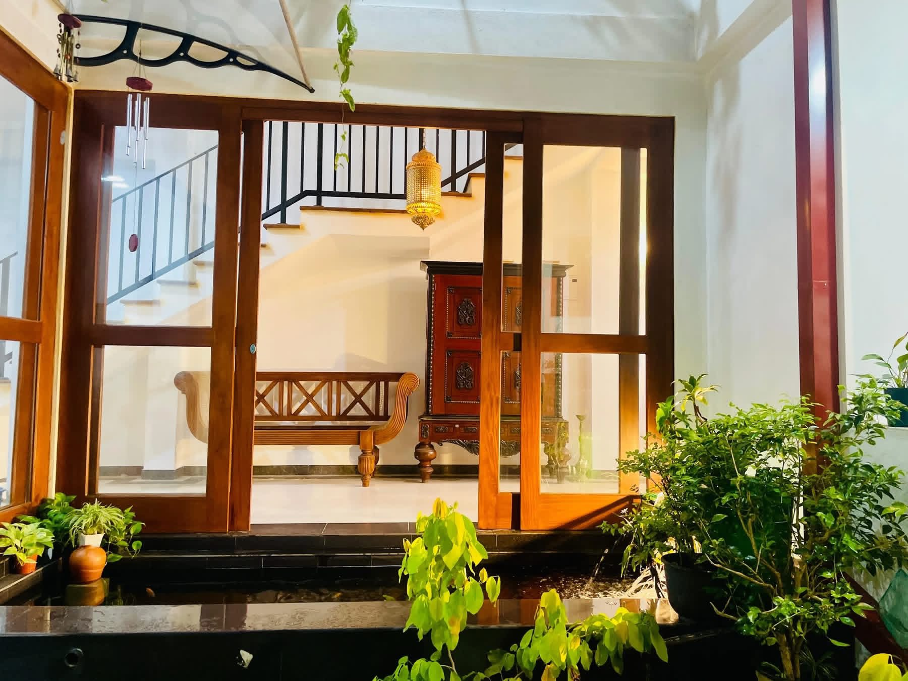
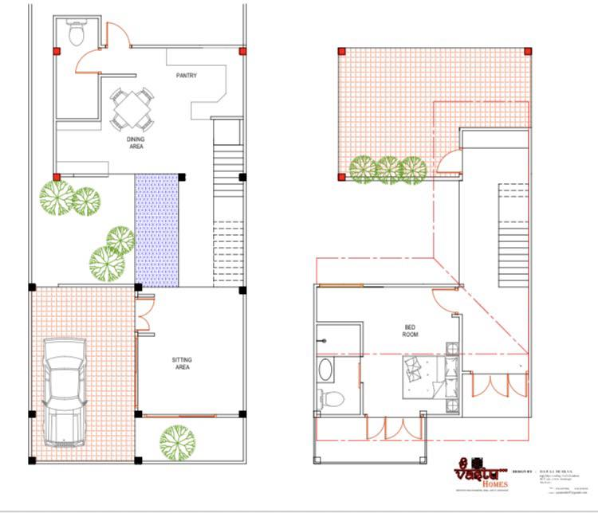
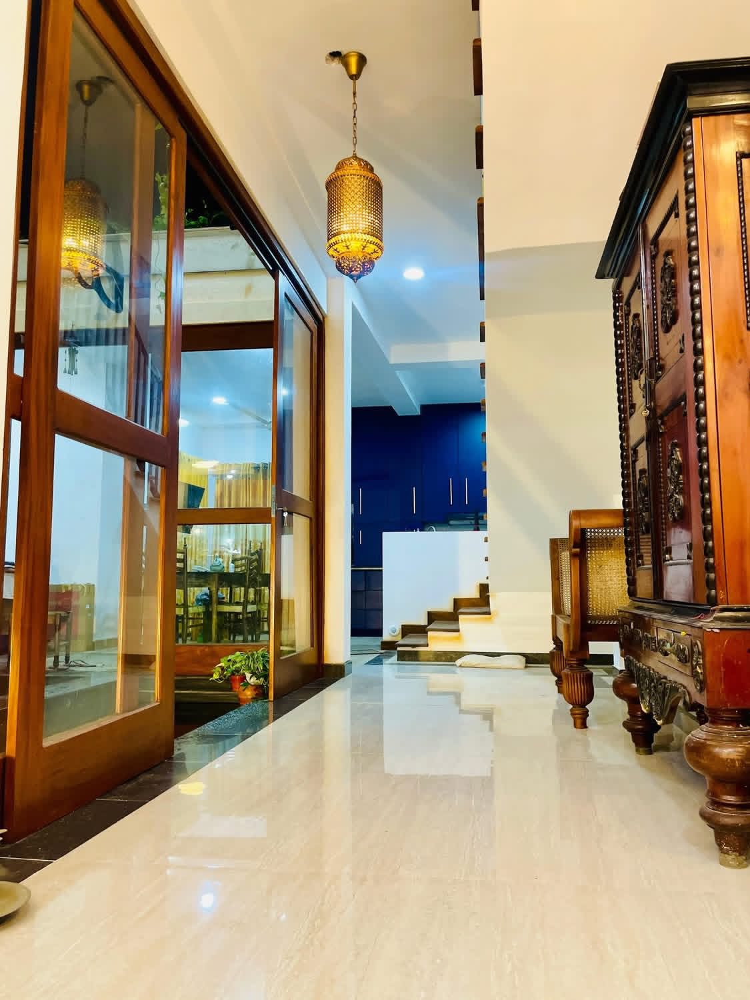
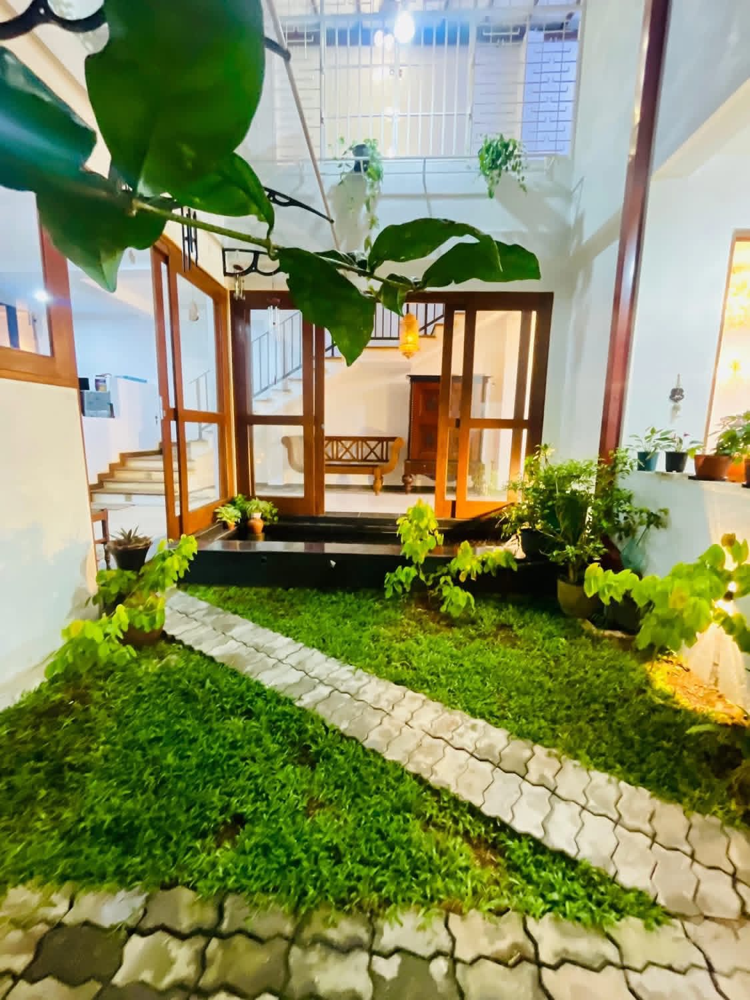
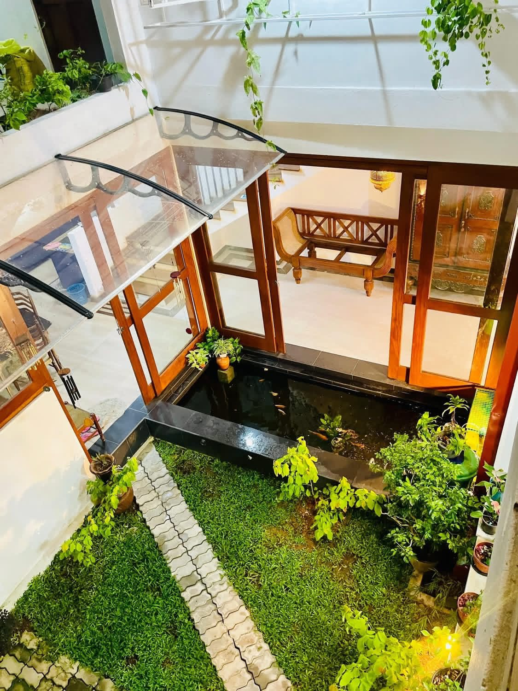

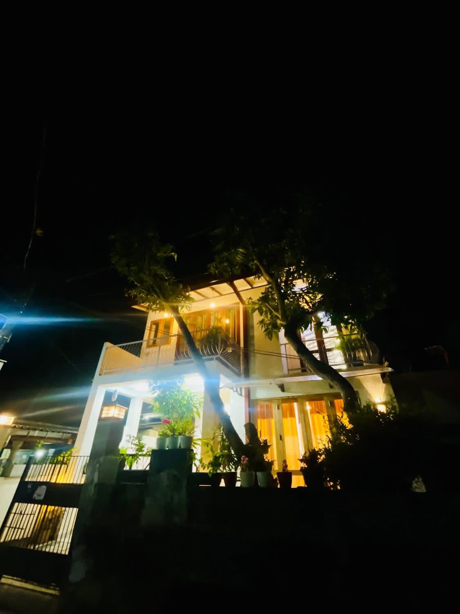

Transform your dream into reality with this elegant, space-optimized, fully modern 3-storey house design, specially crafted for 5-perch land. This design perfectly blends luxury, functionality, comfort, and contemporary aesthetics, making it ideal for modern Sri Lankan families.
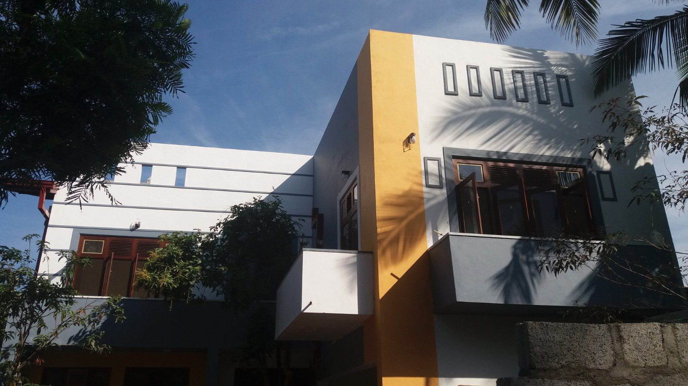
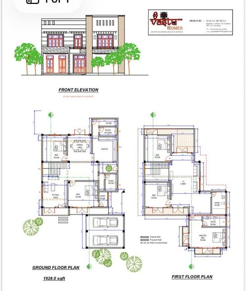
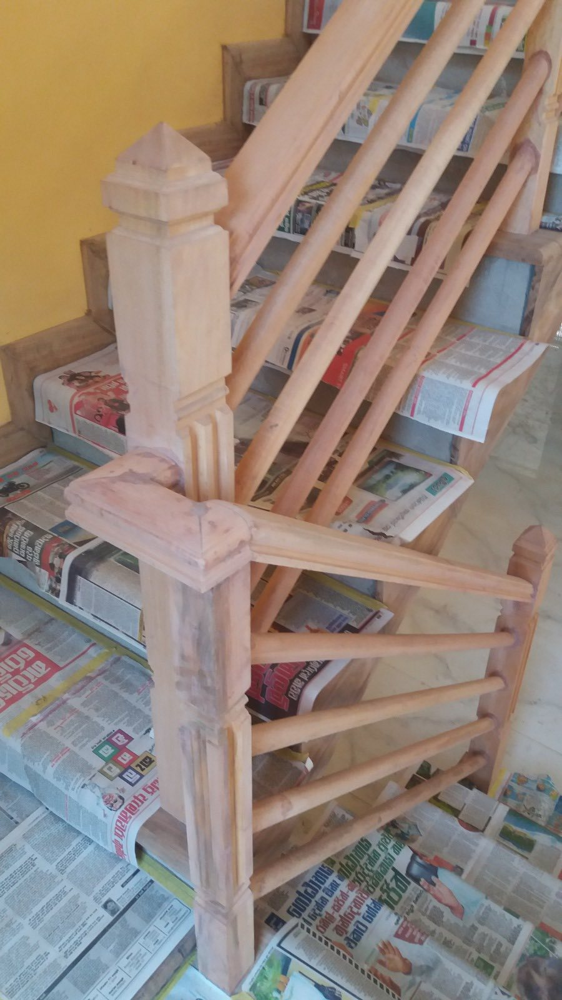
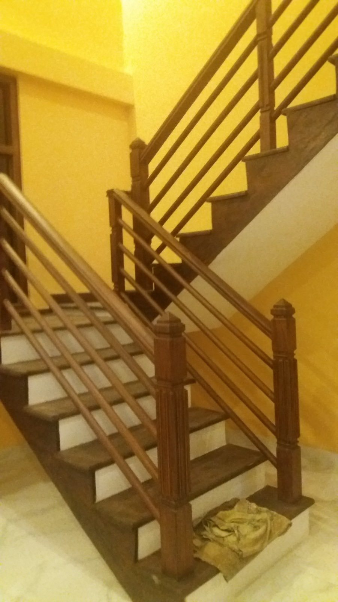
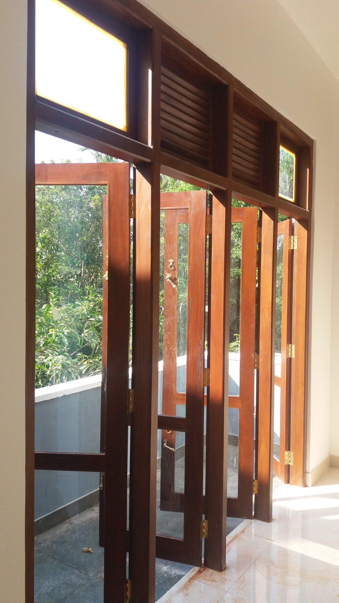

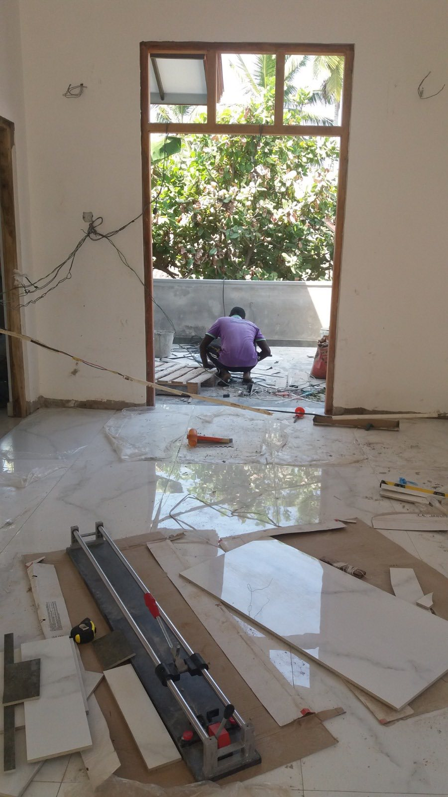
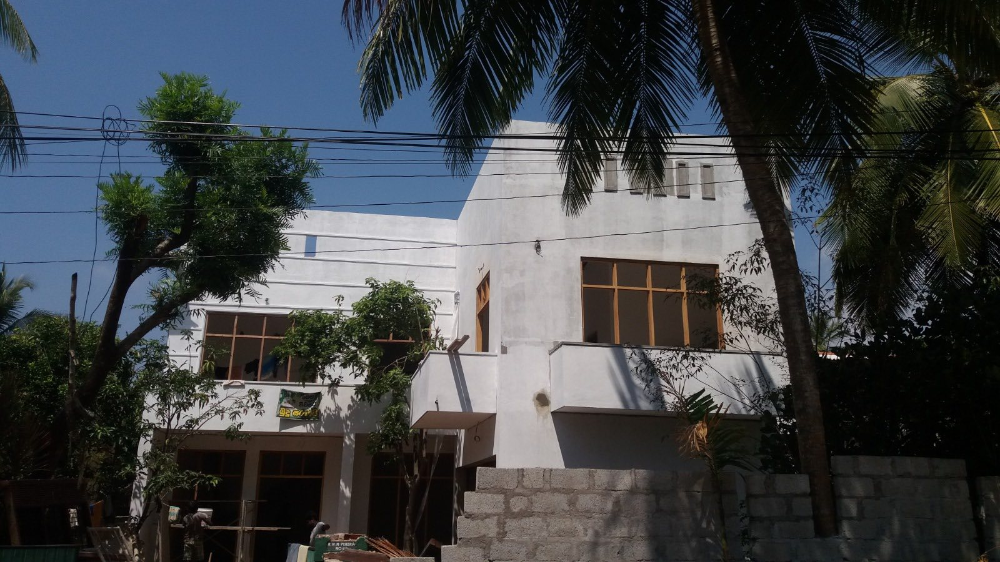

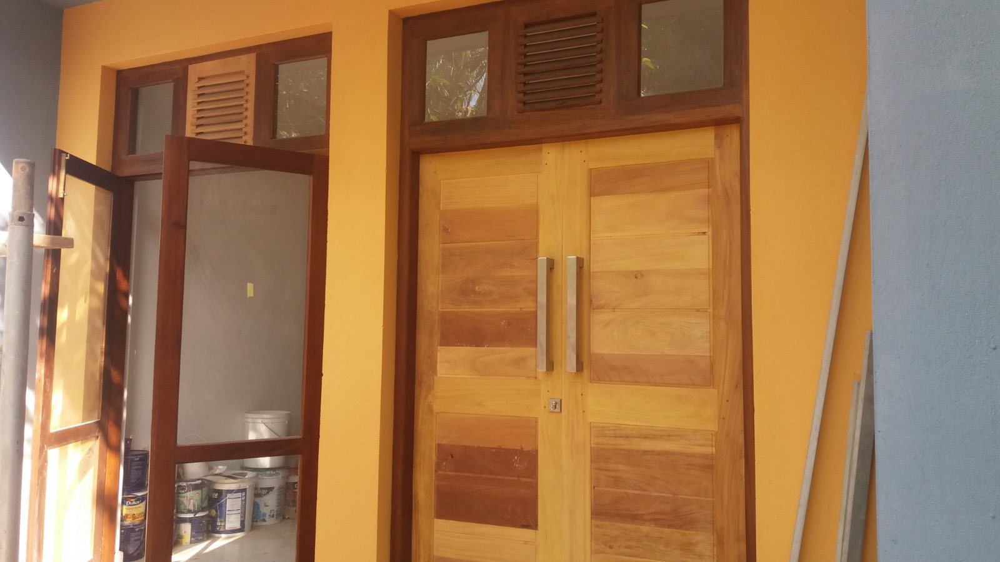
Old Single Story House Renovation – Complete Transformation Solution. We specialize in transforming old houses into fully modern, stylish, and functional living spaces with professional architectural & construction solutions.

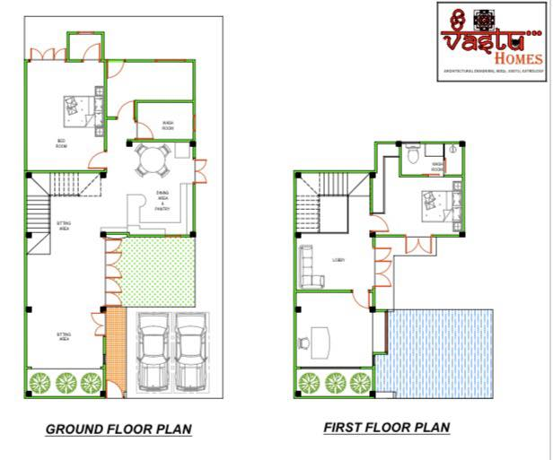

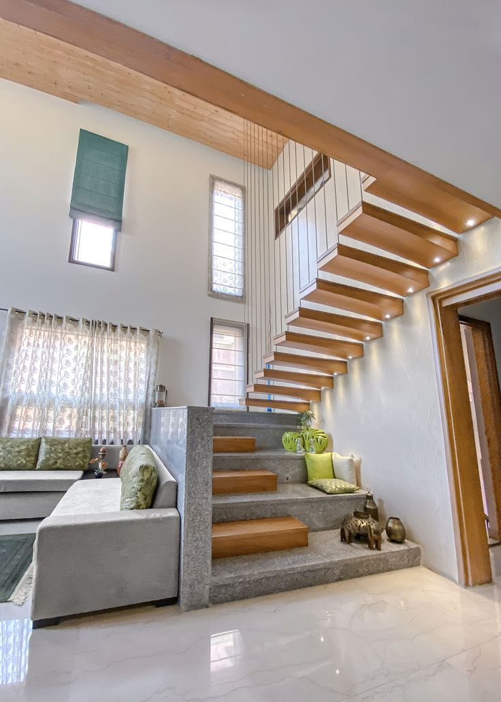

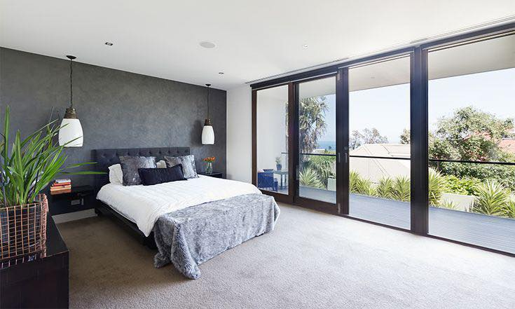
Detailed architectural design for modern box-style 3-storey building Structural redesign & strengthening of existing foundation and columns Full demolition of unnecessary existing elements Construction of additional two floors Complete interior & exterior modernization Full landscaping and external development works
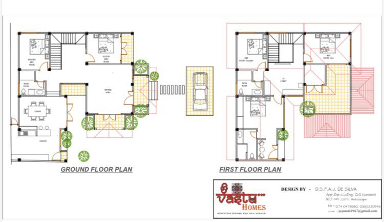


Modern living in Panadura, a beautifully designed home with four bedrooms, elegant living spaces, private and TV lobbies, a luxury suite room, stylish pantry with island, spacious dining area, relaxing sit-outs, and convenient parking.


A modern three-storied housing project featuring four elegant homes with spacious living areas, open pantries, two bedrooms, private parking, landscaped gardens, balconies, and exclusive roof terraces designed for comfortable contemporary living.
Every gem is prescribed only after careful study of the birth chart — never as ornament alone.
ප්රදාන වේද හතරින් අතර්වන් වේදයට අනුව එහි වුක්ශ ශාන්තී සම්බන්ද ආද්යායට අනුව මෙම වෘක්ශ ශාන්තී පූජාවන් හරහා තම තමන්ගේ කර්මානුරූපව පැමිනෙන ගැටලු විශාල ලෙස අවමකර ගත හැක. උත්තර වයිදික ශ්රේශ්ට සූර්ය ආදිත්ය ගුරුකුල් හීම පවතින මෙම වෘක්ශ විද්යාශාස්ත්රය ඉතාම අද්බූත ලෙස විශ්වයේ ක්රියාත්මක වේ..
අදාල තාර්කා හෝ රාශී මූලික දශාව තෝරාගන ඉන්පසුව
පුද්ගලයාට
සෞක්ය
තැම්පතු
නව ආරම්භයක්
නිවසක්
වාහන හෝ ඉඩම් දරුවන්
සතෲ මර්දනය
හවුල් ව්යාපාර වර්දනය
උරුමය
අදයාපනය
රැකියාව
ආදායම් මාර්ග
අද්යාත්මික මාර්ගය
විවාහය
යන තමන්ගේ අවශ්යතාව උදෙසා මෙන්ම ඉතා විශාල ලෙස ආයුශ සහ මාරක ගැලවීම උදෙසා වෘක්ශ ශාන්තීන් සිදු කලහැකි.
එසේම ජන්මපත්රයේ සෝමාවාසය පරීක්ශා කර සොමාවාසයේ මුල...ප්රතම මද්යය... ඩ්ගෙවන මද්යය.. අග ... යන ස්තාන සලකා අනතුරුව අදාල වුක්ශ හෝ මහා වෘක්ශ පූජාව සිදුකල යුතුයි... එයට අදාල පන්චාන්ග ශුද්දිය සහ භූබල ශුද්දිය ඇතුව කිරීම හරහා වෘක්ශ ශාන්තී කර්ම ආරම්භ වන අතර අනතුරුව අදාල කුල දේවතා සහ අනෙකුත් නිත්ය පූජා තැබීමෙන් වෘක්ශ ශාන්තී පූජාවන් සිදු කලහැක.. දනය..බලය..ආයුශ .. වෙනුවෙන් මෙම පූජා තැබීම උත්තර ඉන්දීය බලයේ ප්රදාන ක්රමවේදයකි...කේමදෘම යෝගය කියන්නේ: • ජන්ම කුණ්ඩලියේ නැත්තන් හදහනේ චන්ද්රයා ඉදිරිය (2) හා පසුපස (12) භාවයන් තුළ කිසිදු ග්රහයෙක් නොමැති වීම • චන්ද්රයාට කෙන්ද්ර (1,4,7,10) වලින් ග්රහ බලයක් නොලැබීම • චන්ද්රයා තනියෙන් සිටීම මෙය “චන්ද්ර දුර්බලතාවය” ලෙසත් සලකනවා. මේ ගැටලුව එන්න පූර්ව ජන්ම හේතු ට්ගියෙනවා.. පුරාණ ග්රන්ථයන් වලට සහ ගුරුකුල් වලට අනුව,
කේමදෘම යෝගය පූර්ව ජන්මයේ:
• මව්වරුන්ට, ස්ත්රීන්ට අපහාස කිරීම
• දුප්පත් අයට ආධාර නොදීම
• දාන-ධර්ම වලින් දුරස්වීම
• මානසික වේදනාවන් ඇති කිරීම
චන්ද්රයා “මාතා, මනස, කරුණාව” නියෝජනය කරන නිසා, මේ ක්රියාවල ප්රතිඵලයක් ලෙස මෙය පෙන්වෙනවා. හැබැයි ඒ කියලා තමන්ට වින කරන ඉහත අයට ගැතුවෙන්න කියන එක නෙමෙ...
🌑 කේමදෘම යෝගයෙන් ලැබෙන විපාක
මේ දුර්යෝගය ශක්තිමත් නම්:
• මානසික එකලස්භාවය
• ධන අස්ථිරභාවය
• පවුල් සහය නොලැබීම
• සමාජයෙන් වෙන්වීම
• නිතර සිත් වියවුල්
හැබැයි යෝගය භංග වී ඇත්නම් පුද්ගලයා ඉතා ශක්තිමත්, ස්වයං නිර්මාණශීලී, තනිව උසස්වෙන කෙනෙක් වෙන්න පුළුවන්.
🌕 කේමදෘම භංග වන ක්රම මෙම යෝගය භංග වන අවස්ථා:
1. චන්ද්රයාට කෙන්ද්රයකින් ග්රහ බලය තිබීම
2. ගුරු (බ්රහස්පති) චන්ද්රයාට දෘෂ්ටිය දීම
3. චන්ද්රයා උච්ච / ස්වක්ෂේත්රව සිටීම
4. ලග්නේශ බලවත් වීම
5. රාජයෝග සමඟ සම්බන්ධ වීම
විශේෂයෙන් ගුරු-චන්ද්ර යෝගය (Gajakesari Yoga) ඇතිනම්, කේමදෘම බලය ඉතා අඩු වෙයි. හැබැයි ප්රශ්නෙ මෙහෙම භංග වීම් තියෙන අයගේ ජන්මපට්ග්ර මම පෞද්ගලිකව වසර 20 තිස්සේ පරීක්ෂා කරලා තියෙනවා නමුත් ඔවුන් අදාල ගැටලු සමනය කරගන්න තාක් ඉහත දෝශවලින් පීඩා විදිනවා ශාන්ති කර්ම (උපශම)
1. සොමවාර ව්රත
• සොමවාර උපාසන
• අභිෂේක (ශිව ලිංගයට)
2. ශිව දෙවුදුන් වැදීම
• “ඔම් නමඃ ශිවාය” ජප 108 / 1008
• ට්ගර්පන පූජා
3. චන්ද්ර ශාන්ති
• “ඔම් සෝම් සෝමාය නමඃ” මන්ත්ර ජප
• සුදු වස්ත්ර, සුදු අහාර දානයන්
• දුප්පත් කාන්තාවන්ට සැලකීම
4. දාන
• කිරි, අල, කෑම
• සිඟිති දරුවන්ට සහය දීම
මේවගේ ශාන්තිකර්ම වගේම හරියටම කේන්දරේට අදාල දාන්තීන් ටික කරලා..මේ යෝගය භන්ග කරගන්න... මේක තියෙන මිනිස්සු නරක නෑ හැබැයි දුර්වල මනසවල් ඕනම කෙනෙකුට නම්මගන්න පුලුවන්... නිද්රාශීලි බව සහ රිනාත්මකතාවයෙන් යුතුයි.. මින් එලියට ආවම ඔවුන් විශාල සාර්තකත්වයක් ලබාගන්නවා...
${excerpt}
ක්රිශ්නා අශ්ටමී දිනයේ වතිකානුවේ පවතින පාප් දූරය නැවතීම සමග ලෝකයේ මීලග පාප් දූරය පැමිනීමට පටන් ගනී.
බුද සහ මන්ගල් ග්රහයාගේ නීච තත්වය හරහා බිද වැටුනු පාප් දූරය උත්ට්ගර ඉන්දීය ජෝට්ගීශය අනුව විග්රහයේදී මන්ගල්ගේ නීච තාවය හරහා ඉතිහාසයේ පාප්තුමාට තිබූ සේනාදිනායකතාව අහෝසිවීම පෙන්වයි.
නමුත් උච්ච සූර්යයා විසීම හරහා මින් පසු පත්වන පෝප්වරයා ඉතා ඉහල අදිකාරීත්වයක් හරහා නැවත ලෝකය තුල ස්තිරසාර පාප්පදවියක් ඉතා විශාල මෙන්ම අදික වෑයමකින් මෙන්ම අවස්තා තුනකින් පසුව ප්රතිස්තාපනය කරයි.
එය බොහෝ විට වතිකානුවට දුර නොවූ නගරයක අගහරුවාදා දිනක උපත ලැබූ මෙන්ම ඒකාදසී තිතියක උපතලැබූවකු වීමේ සම්බාවිතාව පවතී.
සර්පයා නියෝජනය කරන උපරිම දැනුම් සම්බාරයෙන් යුත් අස්ලිස නැකතකින් හෝ මීලග නැකත වන මග නැකතින් උපන් පුද්ගල්යකු විය යුතුයි.
බුද මන්ගල් සහ සූර්යා යන ග්රහයන් තුනේ ඒකාත්මික වීමකින් මීලග පාප්තුමා පහල වේ.
“With the resignation of the current Pope on the day of Krishna Ashtami, the path begins for the emergence of the next Pope in the world.
According to Indian astrology, the downfall of the papacy has occurred through the debilitation (Neecha) of Mercury and Mars. This reflects the weakening of the leadership power that Popes historically held—especially through Mars’ debilitation, which signifies the loss of authoritative, military-like command.
However, with the exaltation of the Sun (Uchcha Sūrya), the next Pope will come with a high level of authority, restoring the dignity and stability of the papacy globally—through immense effort and in three distinct stages.
There is a strong possibility that this individual is born on a Tuesday (symbolic of Mars), in a city not too far from the Vatican, and during the tithi of Ekadashi (11th lunar day).
He is likely to be born under the Ashlesha nakshatra (represented by the serpent and associated with deep knowledge) or the following Magha nakshatra—both of which are symbolic of royalty, wisdom, and mysticism.
The next Pope will emerge through the combined force of Mercury, Mars, and the Sun.
එක් එක් වර්ග චක්රයන් හරහා එක් එක් විදයන් රිශිභාදිතයේ පවතී...
උට්ග්ට්ගර ඉන්දීය ආදිත්ය ගුරුකුලය පහත පරිදි එකොලොස්වන වර්ගචක්රය දිගහරී... ජන්මියකුගේ ජන්මපත්ර සටහන්වල සමහර ග්රහ අතිශයින් අහිතකර ලෙස ක්රියා කරන අවස්ථා තිබේ. එවැනි විශේෂ බලපෑම් හඳුනාගැනීමට භාවිතා කරන විශේෂ වර්ග කුණ්ඩලියක් ලෙස රූද්රාංශය (Rudramsa) හෙවත් D11 කුණ්ඩලිය හැඳින්වේ.
ඇත්තෙන්ම D11 කුණ්ඩලි වර්ග තුනක් ලෙසට වෙන වෙනම පවත්වාගෙන යයි.මක්නිසාද ඒ ඒ ගුරුකුල් වල පවතින රහස්ය ගනනයන් හරහා ගනනය කරන බැවින්. රූද්රාංශයසමහරුන් මෙය පරා අංශ ලෙස හඳුන්වන නමුත්, ශාස්ත්රයේ ශ්ලෝක අනුව නිවැරදි නාමය රූද්රාංශය වේ.
ලාභාංශය (ලන්කාවේ බොහෝවිට මෙය භාවිතාවේ).
– සමහරුන් මෙය ගෙවල් හා දේපළ ලාභ සඳහා භාවිතා කරන අතර, තවත් සමහරුන් ආදායම (income) සඳහා භාවිතා කරති.
අයර් (Iyer) විසින් භාවිතා කළ වෙනත් D11 කුණ්ඩලියක් ද පවතී.
රූද්රාංශයේ සැබෑ භාවිතය – මහත්මා ගාන්ධිගේ කුණ්ඩලියෙන් උදාහරණයක් ලෙස
රූද්රාංශය සැබෑවටම ක්රියා කරන ආකාරය මහත්මා ගාන්ධිගේ ජන්ම කුණ්ඩලිය මගින් පැහැදිලි කළ හැක.
ගාන්ධිගේ 7වන භාවාධිපති වූ මන්ගල් ලග්නයේ පිහිටා ඇත. මෙය ඔහුගේ ජීවිතය ඉතා අශාන්තිමත්, සිද්ධීන්ගත හා සටන්මය වූ බව පෙන්වයි. ඔහුට විශේෂ දසාවක් වූ ද්විසප්තති සමා දසා (Dvisaptati Sama Dasa) යොදාගත හැකි වේ.
ඔහුගේ ජීවිතය සම්පූර්ණයෙන්ම වෙනස් කළ සිද්ධි දෙකක් මෙහි විමර්ශනය කෙරේ.
බ්රරහ්මචර්යය (බ්රහ්මචාරී ජීවිතයට යෑමේ) තීරණය
මෙම තීරණය ගාන්ධි විසින් ප්රකාශ කළේ මන්ගල් මහා දසාවේ – සඳ අන්තර්දසාවේදී ය.
රූද්රාංශ D11 කුණ්ඩලිය දෙස බැලූ විට,
මන්ගල් 8වන භාවයේ නිච ලෙස පිහිටා ඇත
මෙය සම්බන්ධතා බිඳවැටීම, විවාහික ජීවිතයෙන් ඉවත්වීම, බ්රහ්මචර්යය වැනි අර්ථ දක්වයි.
මන්ගල් අධිපති වූ සඳ ද 12වන භාවයේ නිච වී කේතු සමඟ ඇත
මෙය සම්පූර්ණ විරක්තිය, වෙන්වීම හා ත්යාගය පැහැදිලිව පෙන්වයි.
එබැවින් බ්රහ්මචර්ය තීරණය පහසුවෙන් තහවුරු කළ හැක.
මරණ සිද්ධිය
මෙය සිදු වූයේ
රාහු දසාවේ – බුධ අන්තර්දසාවේදී ය.
රූද්රාංශ D11 කුණ්ඩලිය අනුව,
රාහු 6වන භාවයේ (සතුරන්ගේ භාවය) සූර්යයා සමඟ සිටී
සූර්ය–රාහු යෝගයෙන් ග්රහණය (eclipse) සෑදේ.
පසුව ගුරුගේ ප්රතිඵල ක්රියා කරයි
ගුරු 3වන භාවයේ MKS (මරණ කාරක ස්ථානය) තුළ මාරක බුධ සමඟ සිටී.
ඒ අනුව රාහු–බුධ දසාව පැහැදිලිවම මාරක දසාවක් වේ.
රූද්රාංශය සමඟ උදු දසා භාවිතා කරන විට කරන ප්රතිකාර
රූද්රාංශය සමඟ උදු දසා භාවිතා කරන විට, ග්රහය සඳහා අදාල මන්ත්ර අංකය ගණනය කළ යුතුය.
එක් රූද්රාංශයක් = 2°43′38″
ග්රහය පිහිටි අංශය අනුව අංකය ගණනය කරයි.
මන්ගල් ගනිමු.
26°23′ ÷ 30 × 11 = 9.67
ඉහළ පූර්ණ අංකය ගන්නා නිසා = 10වන රූද්රාංශය
මෙහිදිජ් රුද්රාමන්ට්ර වලින් අදාල අන්කයේ මන්ට්රය ගතයුතුයි.
ඕම් ගුරවේ නමක්...🙏
සූර්ය කල නල චක්රය...
පුරාන ජොතිශී පලාපල ක්රම වේදයක්වූ සූර්ය කල නල චක්රයෙන් පලාපල කීම කුමක්දැයි බලමු.
මෙය සාමන්ය විම්ශෝත්ට්නරී ක්රමය නොවේ... එකම් චන්ද්ර මූලික ක්රමයක් නොවේ.
සූර්ය කල නල කියන්නෙ ශරීරයේ තුල වන ශුක්ශ්ම ශක්ති පද්දතියේ සූර්ය ශක්තිය මනිපූර චක්රය හරහා ගලායන්නෙ කෙසේද යන්න බලා ඒහරහා සූර්ය ශක්තියේ ක්රියාකාත්වය බලන ජෝතිශ ක්රමවේදය වේ.
තන්ත්ර වලදී මෙය පින්ගලා මාර්ගය ලෙස සලකන අතර උත්තර ඉන්දීය ආදිත්ය ගුරුකුල මෙය මනිපූරයේ සූර්ය කල නල ලෙස හදුන්වයි.
නාම අර්තයෙන් ගන්නකොට
සුර්ය .. සූර්යා සහ ආත්මය
කල.... කාලය සහ ශක්ති ප්රවාහයක්
නල ... නාලිකාව හෙවත් සූක්ෂම ශක්ති නාලය
සූර්ය දක්තිය ප්රදානකොට අදිකාරී බලය.. ක්ටියාශීලීත්වය.. ආත්මවිශ්වාසය..කරම ක්රියාත්මක වීම නියෝජනය කරයි.
සරලව සූර්ය කල නල කියන්නෙ කාලයට අනුව ක්රියාකරන සූර්ය ශක්ති ප්රවාහය වගේ අර්තයක්..
ජෝතිශයේ සූර්ය කල නාල සම්බන්දතාවය
සූර්ය බලය
මේශ ..සිම්හ..දනු රාශි
10වන භාවය..කාර්ය
පිතෲ කර්මය
ආත්මය
පූර්ව ආත්මීය ආයුර්වේද ජෝතිශය
ආදී දේවල් සදහා යොදාගන්නවා..
මෙය කෙලින්ම ගනනය බලපාන්නෙ
නායකත්වය සහ එහි පැවැත්ම
රාජකාරී හා වෘත්තීය උසස්වීම්
ආත්ම ගෞරවය
ශරීර ශක්තිය
ආරක්ශක ශක්තිය
බලය
ජීර්නය
කෝපය සහ අහම්කාරය වගේ දෙවල් වලට.
සූර්ය කල නාල දර්මය ජ්රියාත්මක වීම හරහා සූර්ය ශක්තිය පිරිසිදුව බලෙන් නොව නිරායාසයෙන් ලැබීම ඇතිවීම විදියට හදුන්වනවා .
මෙහිදී හදහනක සුය්ර්ය කල නල විශ්ලේශනය කරන්න.
සූර්ය කලා එකක් තත්පර 24 ලෙස ගනින්න ඕන.
සැමවිටම උදේ 6 න් පටන්ගන්න උදාහරණයක් විදියට උදේ 7 වෙනකන් ගනනයබ්කරන්න නම් සූර්ය නාල 150ක් එකතුකරගන්න.
ඉන්පසු ප්රශ්න ජෝතිශය සහ මුහුර්ත නියමය එකතු කල්ල
අවශ්යනම් ප්රශ්න ජෝතිශ හෝ ජොඉතිශය යන දෙකෙන් පලාපල විග්රහය කරන්න පුලිවන්..
නක්ශත්ර 27 ක්රමෙනුයි
යෝගි සහ මෘත්යු භාග වලිනුයි
ත්රිශ්පුට එක්කයි කරන එක හරි නමුත් උපග්රහ ගනනය කරන්න එපා..
හැබැයි වක්රතාවය සලකන්න ඕන..
ලග්නය කුමන නැකතේද කියලත් බලන්න වෙනවා.
.යම් තරමක සන්කීර්න උනාට දසවැන්නට අදාලව
මනීපූරය පවතින තැනට අදාලව
තාන්ත්රික අදාලතාවයන් වලට
බලය වෙනුවෙන් ගැටලු හොයාගන...
නිවැරදි යන්ට්ර මන්ට්ර තන්ට්ර සාදනයට විශාල ලෙස ප්රයෝජනවත් වෙන නිසා නිකන් රවිගෙ අපලෙ..අන්න ඒවගේ සාමොරදායික වචන එක්ක නොගිහින් ගරියට වෘත්තීය වෙනුවෙන් බලය වෙනුවෙන්.. අදිකාරීත්වය වෙනුවෙන් පලාපල විග්රහ කරගන්න පුලුවන් සුවිශේශී ජ්රම වේදයක්...
සන්කීර්න ගනනයක් තියෙනවා උනත්...
හැබැයි කෙනෙක් ඒකෙන් පලාපල කියනවානම් නිවැරදිව සූර්ය කල නල චක්රය ඇදලා අදාල සූර්ය මන්ට්රය කියලා පලාපල කියන්න පටන් ගන්න....🙏🙏🙏
මකර සංක්රාන්ති යනු සූර්යයා ධනු රාශියෙන් ඉවත් වී මකර රාශියටප්රවේශ වීමයි.
මෙය සූර්ය සංක්රාන්තියක් වන අතර, චන්ද්ර මාසයට නොව සූර්ය ගතිකත්වයට අනුගත වීම නිසා සදාකාලිකව (සාමාන්යයෙන් ජනවාරි 14 හෝ 15) පැවැත්වේ.
වේදයන් අනුව මෙය
උත්තරායණය ආරම්භ වන දිනයයි
දෙවියන්ගේ දිනයක් ලෙස සැලකේ (දෙවියන්ට දිනය – මනුෂ්යයන්ට වර්ෂයක්)
භගවද් ගීතා (8.24) අනුව –
උත්තරායණ කාලයේදී ශරීරය හැර යන ආත්මයන්ට මෝක්ෂයට යාමේ මාර්ගය විවෘත වේ.
උත්තරායණය – ආධ්යාත්මික අර්ථය
දකුණු ආයණය – අන්ධකාරය, භෞතික භෝග
උත්තරායණය – ප්රකාශය, ධර්මය, ජ්ඥානය
ඒ නිසා මකර සංක්රාන්ති
අභ්යන්තර පිරිසිදු වීම,
කර්ම ශුද්ධිය,
ආධ්යාත්මික උත්ථානය සඳහා ගුරුවරයා අතිශයින්ම බලවත් වේ.
ජ්යෝතිෂ්ය විස්තර
මකර රාශිය
• රාශි අධිපති: ශනි ( ශනි දෙවියන්)
• තත්ත්වය: පෘථිවි (පටවි)
• ගුණය: චර (චලනය වෙනවා)
මකරය නියෝජනය කරන්නේ
කර්ම
වගකීම්
ආත්ම නියෝග
දිගුකාලීන සාර්ථකත්වය
සූර්යයා මෙහි ඇතුළු වීමෙන්
ආලෝකය + කර්ම ශක්තිය එකතු වේ
අධිෂ්ඨානය සහ ධෛර්යය වර්ධනය වේ
🪐 ශනි සහ සූර්ය සම්බන්ධය
ශනි – කර්ම දෙවියන්
සූර්ය – ආත්ම ශක්තිය (Atma Karaka)
👉 මෙහිදී
• අහංකාරය අඩුවෙයි
• අභිමානය පාලනය වේ
• සැබෑ වගකීමෙන් ජීවිතය බැලීමට බලය ලැබේ
ඒ නිසා මකර සංක්රාන්ති
කර්ම ගෙවීම්, නව ආරම්භ, ශාප නැසීම සඳහා යෝග්ය වේ.
මකර සංක්රාන්තිදී කළ යුතු යහපත් ක්රියා
1. සූර්ය අර්ඝ්ය පූජා
• උදෑසන සූර්ය උදාවේදී
• තඹ පාත්රයකින් ජලය + තිල + රතු මල්
• “ඕම් සූර්යයා නමඃ” මන්ත්රය
2. ශනි ශාන්ති
• කළු තිල දානය
• කළු ඇඳුම්, තෙල්, ධාන්ය දානය
• “ඕම් ශං ශනිචරාය නමඃ”
3. ස්නානය (පුණ්ය ස්නානය)
• ගංගා ස්නානය ඉතා බලවත්
• ගෙදරදී: උණුසුම් ජලයට තිල එකතු කර
4. දාන
• අන්න දානය
• උණුසුම් ආහාර දානය
සූර්ය කර්ම විශේෂයෙන් ක්රියාත්මක වේ..
එසේම සූර්ය දෙවියන්.. ශිව දෙවියන් හා විශ්නු දෙවියන්ගේ සූර්ය ස්වරූප වෙනුවෙන් පූජා පවත්වයි.
මකර සන්ක්රාන්තිය තනිකරම දිව්යමය ආලෝකය දිඋර්ගකාලීන සාර්තකත්වය සදහා ජීවිතයේ මාර්ගය විවර කරන දිනයකි...
නිවසට හෝ ව්යාපාරයට දනය ග්ර්න ඒමට යන්ට්රයක්
යන්ත්රයක් යනු මැජික් නොවේ. එය ඔබගේ අපේක්ෂිත සිද්ධියන් හා කැමතුම් සපුරාලීමට උපකාරී වන මාර්ගයක්, ක්රමයක් හෝ තත්ත්වයක් පමණි. වේද හා ශාස්ත්රානුසාරයෙන් යන්ත්ර ශක්තිය විශාල ක්ෂේත්රයක් බැවින්, නිසි උපදෙස් හා විධාන පිළිපදින්නේ නම් එය ඉක්මන් මාර්ගයක් ලෙස සැලකේ. අපගේ මහ රැෂිවරු යන්ත්ර පුරුදු කර නිරවද්යතාවයට පත් කර, අපට එහි මාර්ගය දකිවමින් සිටිති. දැන් එය අනුගමනය කිරීම අප සතුය.
කිසිවෙකුට හානියක් නොකරන්න.
යහපත කරන්න — යහපතක් ලැබේ.
විවිධ ශාස්ත්රවල, යන්ත්රය උසස් ගෞරවයකින් හැඳින්වේ, මන්ද එය දෙවි හා දෙවියන්ගේ සත්ය ප්රතිභාවය පිළිඹිබු කරන මාර්ගයක් බැවිනි.
දෙවියෝ යන්ත්රය තුළ වාසය කරති යැයි කියപ്പെടുന്നു. එබැවින්, යන්ත්රයේ පූජාව නොකොට ඔබට දෙවියන් පුද නොකළ හැකිද, යන්ත්රයේ අපේක්ෂිත ප්රතිඵලද ලබාගත නොහැක.”**
“කාලි” යන්න “කාල” යන සංස්කෘත වචනයෙන් ආපු වචනයකි.
“කාල” යන්න කියන්නේ කාලය, වෙනස්වීම සහ අනිවාර්ය මරණය යන්නයි.
ඒ නිසා ශ්රී කාළි දේවිය කියන්නේ කාලයම ඔක්කොම සියල්ල බිහි කරණ, පෝෂණය කරන හා විනාශ කරන ශක්තියම කියන එකයි. වේද වලින් සහ තාන්ත්රික ග්රන්ථ වලින් අනුව, ඇය මහාකාල (ශිවන්) ගේ ශක්තිය ලෙස දැක්වෙයි.
ශිව සන්සුන්, නිශ්චල බුද්ධිය නම් — කාළි ඒ ශක්තිය ක්රියාත්මක කරන චේතනාවයි.
වෙදසහ තාන්ත්රික දෘෂ්ටිකෝණයෙන්, කාලි දේවිය භයජනක නොවෙයි — ඇය මහ මව්වරුන්ගේ සත්ය රූපයයි.
• ඇය භය, මරණය සහ අවිද්යා මත ජයගන්නා ශක්තියයි.
• ඇය මිනිසාගේ අහංකාරය හා මෝහය විනාශ කර, ආත්මය (නිර්මල ජීවය) දක්වයි.
• යෝගීය විචාරයෙන් ඇය මුලාධාර හා ආඥා චක්ර දෙකම පාලනය කරයි – අධෝභාගයෙන් ආලෝකය දක්වා ශක්තිය උත්ථාන කරයි.
තාන්ත්රික වේදයන්හි, කාලි දේවිය ආද්ය ශක්තිය ලෙස හැඳින්වෙයි විශ්වයේ මුල් සෘජු බලය.
ඇය කුණ්ඩලිනි ශක්තිය (පෘථිවියේ ශක්තිය) අවදි කර, ශිව සමඟ එකතු වන ලෙස සහස්රාර චක්රය දක්වා නංවයි.
එය මෝක්ෂය – නිවණ සහ සත්ය අවබෝධයයි.
කාළි විනාශය නොවේ ඇය නිදහසයි.
ඇය විනාශ කරන්නේ මෝහය පමණක්; පෙන්වන්නේ සදාකාලික, මරණයෙන් තොර සත්යයයි.
උග්ර ශක්තියක් ලෙස කාලි පළමුව ෘග්වේදයේ “අග්නි” (ගිනි දෙවියන්ගේ) අන්ධකාරමය ශක්තියක් ලෙස සඳහන් වේ.
දේවී මහාත්මියාවෙහි, දූර්ගා දේවියගේ නෙතින් ඇය උපන් බව සඳහන් — රක්තබීජ, චණ්ඩ, මුණ්ඩ ආදී අසුරයන් විනාශ කිරීමට එට්ගුමිය පැමිනියායැයි කියයි...
කෙනෙක් තුල ස්ග්රී කාලිය වෙත භක්තියක් හටගන්නවානම් අනිවාර්යෙන් ඔහු ඒ සදහා තමන්ගේ ශරීරය .. මනස.. ආත්මය කැප කල යුතුයි...
මන්ද ආදරනීය මවක් දරුවන් දඩුවම් කොට නිවරදි මාර්ගයේ පිහිටුවන්නේද එසේම මැයද තම දඑඋවන් තනව් තනව් දන්ඩහර ලෙස නිවරදි කරවයි...
රාගු හෙවත් රාහු... 8 වන භාවයේ සිටීම
ජ්යෝතිෂ්යයෙහි “රන්ද්ර භාවය” ලෙස හඳුන්වන අශ්ටම භාවය (8 වන භාවය) වඩාත් භාග්ය උද කරන ස්ථානය ලෙස සැලකේ. මෙම භාවයේ ස්වාමීන් ගැටලු ගෙනෙන ලෙස අර්ථදක්වයි – නරක අර්ථයකින්. බොහෝ අධ්යයන මෙය ගැන සිදුකර තිබූ නමුත් මෙහිදී අප පරීක්ෂා කරන්නේ රාවු 8වන භාවයේ සිටීමේ ප්රභාවයයි.
සාමාන්යයෙන් ජ්යෝතිෂන්යයන් සිතනුයේ අති දුෂ්ට භාවය (😎 හා අති දුෂ්ට ග්රහය (රාහු)) එකට බැඳීමෙන් ඉතා නරක ප්රතිඵල ලැබෙන බවයි. නමුත් එය සෑම වෙලාවේම සත්ය නොවේ.
රාහු 8වන භාවයේ සිටින විට හදිසි වාසනාවන් හෝ අනපේක්ෂිත වෙනස්කම් ලබා දිය හැක.
එය වෙනත් භාවයක ස්වාමියා සමග යුගල වූ විට, එම ග්රහය සම්බන්ධ කාර්යයන් හරහා රාවුගේ (හොඳ හා නරක දෙකම) ප්රතිඵල සක්රීය වේ
.ඇල්බට් අයින්ස්ටයින්ගේ කුණ්ඩලියේ, රාහු 8වන භාවයේ ඇත, එයට උච්ච මංගලය (6 සහ 11 භාවයන්ගේ ස්වාමි) එකතු වී ඇත. මෙයින් පර්යේෂණ තුළ සාර්ථකත්වය හා විප්ලවීය සොයාගැනීම් නිසා ලෝකප්රසිද්ධියක් ලබා දෙන බව පෙන්වයි. මංගල් යුද්ධ දෙවියන් නම් වන නිසා මෙම පර්යේෂණ බලවත් අවි (උදා: න්යෂ්ටික බෝම්බය) සෑදීමට යොදාගන්නා බව දර්ශනය වේ. 6වන භාවයේ ස්වාමියා නිසා යුද්ධයක් හෝ සටනක් රාවු 8වන භාවයේ බලය සක්රීය කරයි. මෙහිදී උච්ච ග්රහයකුත් සමඟ රාහු 8 භාවයේ සිටීම අයින්ස්ටයින්ට ශක්ති (අග්නි තත්ත්වය) සම්බන්ධ පර්යේෂණයෙන් විශාල සාර්ථකත්වයක් ලබා දුන් “ආශීර්වාදයක්” බවට පත්වේ.
මිථුන රාශියේ උච්ච රාවු 8වන භාවයේ නම්, ප්රසිද්ධ හෝ ධනවත් පවුලක උපත, උරුම ලැබීම, ජීවිතය පුරා අහිඟ නොවීම යනාදිය පෙන්වයි. මෙය සත්ය ආශීර්වාදයකි, යැයි කියන්නේ සතුටු භාවයේ ස්වාමියා වන රාවු (කුම්භ රාශියේ සමස්ථභාවයේ 4 වන භාව) 8 භාවයේ උච්ච වූ බැවිනි.
සාමාන්යයෙන්, රාවු 8වන භාවයේ උච්ච වූ විට හෝ උච්ච ග්රහයකුත් සමඟ සිටින විට මෙය නිසැකවම ආශීර්වාදයකි. (මෙහිදී උච්ච රහසිගත / අයුෂ්යය සඳහා වෘෂභ නොව, මිථුන මූලික කරගන්නා බව සලකන්න).
8වන භාවය බියක් දැනෙන භාවයක්.
රාහු එහි සිටියත් සැමවිට නරක නොවේ.
උච්චයෙන් හෝ උච්ච ග්රහය සමඟ නම්, හදිසි වාසනාවන්, උරුම, ප්රසිද්ධිය, පර්යේෂණ සාර්ථකත්වය ලැබිය හැක.
පවුල් උරුමය, පරම්පරා ගමන් කිරීම, ශක්තිමත් නැගී එමිය.
ඒ නිසා, රාවු 8වන භාවයේ සිටීම සෑම විටම භයානක නොවෙයි – බොහෝ විට එය සැඟවුණු ආශීර්වාදයකි.
ඔබගේ එසේ පිහිටියේ නම් එය නැවත සුමටව පැඃඇදිලිව ණැණ්වත් ජෝතීශන්යකු හරහා කියවාගන අදාල වාසනාගුනය උදෙසා කල යුතු ප්රතීකර්ම අසාදැනගන්න...
🙏🙏🙏🛕 ශංකරි දේවී ශක්ති පීඨය (තිරිකුණාමළය)
• දේවියගේ නම: ශංකරි දේවී (පාර්වතී දේවියගේ එක් ආකාරයක්)
• භෛරව නායකයා: රිෂ්ව හෝ රක්ෂසේශ්වර
• පතිත වූ ශරීර අංගය: (සංස්කෘතික කථා අනුව) සතරින් පහළ කොටස/යෝනිභාගය
• පිහිටීම: තිරිකුණාමළයේ කෝනේශ්වරම් දේවාලය ඇතුළත, ස්වාමි ගල මත පිහිටා ඇත.
⸻🕉️ ආගමික වැදගත්කම:
• මෙය ශක්ති පීඨ 51න් එකක් වන අතර, දේවී සතීගේ ශරීර භාග බිම වැටුණු ස්ථාන ලෙස සළකයි.
• මෙය ඉන්දියාවේ ශක්ති පීඨ වලට වඩා ප්රචලිත නොවුණත්, උත්කෘෂ්ට ආධ්යාත්මික බලයක් සහිත ස්ථානයක් ලෙස සැලකේ.
• කෝනේශ්වර දේවාලය තුළම පිහිටා ඇති බැවින්, ශෛව හා ශාක්ත සම්ප්රදායන්ගේ එකමුතු භක්ති ස්ථානයක් ලෙසත් ද හැඳින්වේ.
⸻🕰️ ඉතිහාසික තොරතුරු:
• මෙම ස්ථානය වසර දහසකට වැඩි පැරණිව තිබෙන බව විශ්වාස කෙරේ.
කාශිකන්ඩ පුරානයට අනුව කාසි ශේශ්රය ශිව දෙවියන්ගේ ත්රිශූලයේ උල් තුනේ පවතී... එම උල් තුනේ දෙවාල තුනක් පවතී..ඕම්කාරේශ්වර දෙවොල උතුරින්ද මද්යයේ විශ්වේද්වර දෙවොලද කේදාරේශ්වර් දෙවොල දකුනේද පිහිටයි
එසේම අශ්ට බයිරව දේවාල අට හරියටම
කාඩිනල අටේ පවතී ඒවා නම්
උම්මත්ත බයිරව
ක්රෝද බයිරව
කපාල බයිරව
අසිතාන්ග බයිරව
චන්ඩ බයිරව
රූරු බයිරව
භීශන බයිරව
සම්හාර බයිරව ලෙසටයි
කලින් කියූ දේවාල තුන කේන්දර කර මන්ඩල 7ක් ගනපති කෝවිල් 56ක් පවතිනවා. ඒ පනස් හය දක්ශිනාවර්ත ම්ණ්ඩල 7ක් ලෙසට වන්දනා ක්ළ යුතුයි.
ඊට අමරව ඉන්පසු අනෙක් යෝගිනී දේඑආල 64ව්න්දනා කලයුතුයි.9ක්වූ නවදුර්ගා දේවල නවය සහ 9ක් වූ චන්දී දෙවිලවල් වන්දනා කලබ්යුතුයි. ඉන්පසි සූර්ය දෙවොලවල් 12වන්දනා කල යුතුයි
එසේම සිලලුම 468ක්වූ ප්රදාන කාශියේ දේවාල ව්ණ්දනා කලබ්යුතුයි..
${excerpt}
ලලිතා සහාස්රනාමයේ සඳහන් පරිදි, ලලිතා දේවිය චිදාග්නි හෝම කුණ්ඩයෙන් පරිණත වී, “චක්ර රාජ රථය” නම් විශේෂ රථයක ආසීනව ප්රකට විය. එබැවින්, ඇය පිළිබඳව “චිදාග්නි කුණ්ඩ සම්භූතා”, “දේව කාර්ය සමුද්යතා” සහ “චක්ර රාජ රථාරුඝා සර්වායුධ පරිශ්කෘතා” වැනි විස්තර ලලිතා සහාස්රනාමයේ සඳහන් වේ.
සෘෂ්ටි ක්රමය (ස්රෂ්ටියෙහි ක්රමය)
ලලිතා දේවිය, තම ඇත්තාව දෙදීමක් ලෙස - පුරුෂ හා ස්ත්රී ස්වරූප දෙකක් ලෙස විහිදුවමින්, සෘෂ්ටිය (ස්ෂ්ටි - මැවුම්) ඉදිරියට ගෙන ගියේය.
1. වමන ඇසින් (සෝම – චන්ද්ර ස්වභාවය ඇතිව)
• බ්රහ්ම හා ලක්ෂ්මී දේවිය ප්රකට විය.
2. දකුණ ඇසින් (සූර්ය – සූර්ය ස්වභාවය ඇතිව)
• විෂ්ණු හා පාර්වති දේවිය ප්රකට විය.
3. ත්රිතිය නෙත්රයෙන් (අග්නි – ගිඟුරු ගින්නේ ස්වභාවය ඇතිව)
• රුද්ර හා සරස්වතී දේවිය ප්රකට විය.
ඉන්පසු, ලක්ෂ්මී - විෂ්ණු, පාර්වති - ශිව, සහ සරස්වතී - බ්රහ්ම යන යුගලයන් හැඳිවිය.
විශේෂ මැවීම් (නිර්මාණය කළ දිවයින්)
• යුරා (හෘදය) න් – බලා දේවිය (බාලා දේවිය) මැවීය.
• බුද්ධියෙන් – ශ්යාමලා දේවිය මැවීය.
• අහංකාරයෙන් – වාරාහි දේවිය මැවීය.
• සිනාවෙන් – විඥ්ඥේශ්වර ප්රකට විය.
ශ්යාමලා දේවිය – මන්ත්රිනී දේවිය ලෙස
මහා සෘෂ්ටිය අවසානයේ, ලලිතා දේවිය තම ස්වාමි, ශිව කාම සුන්දර දේවන්ට “ශිව චක්රය” මැවීමට කියා සිටියේය. ශිව දේවන් ඉතා ශබ්දයක් නිකුත් කළ අතර, එයින් ශිව චක්රයේ දේවතාවන් 23ක් ප්රකට විය.
එවිට, ලලිතා දේවිය ශ්යාමලා දේවියට මන්ත්රිනී (අග්රමන්ත්රි) ලෙස තනතුර ලබාදෙමින්, ඇයගේ අංගුලි මුද්රාව (ඇඟිලි මුද්රා වළලු) භාරදුන්වා.
මේ හේතුව නිසා, ශ්යාමලා දේවිය “මන්ත්රිනී දේවිය” ලෙසද, “හාසන්තිකා ශ්යාමලා” ලෙසද හැඳින්වේ.
දසතාන්ත්රික මාතාව වන ඇයගේ හෝමය තුලින් උත්තරීතර දිව්යමය දැනුම ලගාකරගැනීමට හැකියාව වන අතර රාජශ්රී සෞභාග්යය සහ අද්යාත්මික දැනුම ලගාවන බව නිත්ය පලසෘතියයි...
${excerpt}
දත්තාත්රේය භගවන් – දිව්ය ත්රිමුර්තින්ගේ එකමුතු ස්වරූපය
දත්තාත්රේය භගවන් බ්රහ්මන්, විෂ්ණුන් සහ ශිවන්ගේ සංයුක්ත අවතාරයකි. ඔහු සෑම දෙයකම මූලික සත්යය වන සර්ව සාම්ප්රදායික ත්රිමුර්තින්ගේ නිර්මාණය, පෝෂණය සහ විනාශය යන මූලික මූලධර්ම නියෝජනය කරයි.
දත්තාත්රේයන් සාමාන්යයෙන් තුන් මුනක් සහිතව දර්ශනය වේ. එය ත්රිමුර්තින්ගේ ඒකාබද්ධත්වය දැක්විය හැක. ඔහුගේ හය අත් සන්සුන් මූලධර්ම නියෝජනය කරන සංකේත වස්තු තියාගන සිටිනවා
දත්තාත්රේයන්ගේ රූපයන්හීදී ඔහුට සමීපව පස්නාළු ගවයා සහ සතරමහා උපදේශ දේශනා කරන බල්ලාන් සිටී. එය සිව් වේද නියෝජනය කරයි. ගවයා මව භූමිය නියෝජනය කරයි.
දත්තාත්රේය භගවන් ප්රඥාව, ජ්ඣානය සහ මෝක්ෂය නියෝජනය කරමින් භක්තිමත්යන්ට ආත්මාර්ථ සන්ධානය කරවා ගැනීමට මග පෙන්වයි.
${excerpt}
ශ්රී මාතා ශ්රී මහාරාජිනී....
ශ්රී මහා ලලිතා ත්රිපුරසුන්දර මෑනියන් වනාහී සියලූම ලෝමයන් වල මාතාව වන්නීය.
ඇයට මව් වන අනෙක් කෙනෙකුන් නැතිවා සේම ඇය ස්වයම්බූද වේ...
ශ්රී තත්වයේ උපරිමය ඇය වන අතර අනෙක් සියලු ශ්රී තත්ව ඇයට පහලින්ම වන්නේය...
ඇයගෙන් පැමිනෙන කිසිදු අවතාරයක් මව් ගැබක නොදරන්නේමය.
කිසිදු ගැබක්තුල ඇයව දැරිය නොහැකි බැවිනි...
දෙවියන්ගේද, මනුෂ්යයන්ගේද, යක්ෂයන්ගේද, ගන්ධර්වයන්ගේද, සම්පත් සහ ශක්තියේද රැජිණ වේ.
ඇය සර්ව රාජ්ය බලය, සම්පත්, විද්යා, ශක්තිය, ප්රභාව සහ ආධිපත්යය සතු මහා රැජිණියකි.
මේ නාමයන් ශ්රී ලලිතා සහරනාම ස්තෝත්රයේ මුල්ම දෙකක් වන අතර එතුමියගේ මව්ත්වය සහ ආධිපත්යය පළමු මොහොතේම ප්රකාශ කර සිටී.
යමෙක් එතුමිය තමන්තුල පිහිටීමට ක්රියාකරයිද වාග්දේවීය ඔහුට්ගුල වාසය කරයි. එසේම කෙනෙකු තමන් තුල ශ්රී දේවිය ක්රියාත්මකවීමට පිරිසිදුවේද ඔහු නිත්ය නිර්මල මෝක්ශ මාර්ගයට අවතීර්න වූවාහා සමානය..
යමෙක් තමාතුල එතුමියට ආලයම් තනයිද තම ජීවිතයේ සිම්හාසනේශ්වරිය ක්රියාත්මක වේ..
“චිතඥ්ඥ කුණ්ඩ සම්භූත” යනු සංස්කෘත වාක්යයකි.
“මනස තේරුම් ගන්නා (ප්රඥාවෙන් පිරුණු) ශුද්ධත්වයෙන් උපන් (දෙවි පිළිවෙත් ලැබූ) සත්ත්වයා” ලෙස අර්ථ කිවකළ හැක.
මෙය සාමාන්යයෙන් දෙවියන්ගේ හෝ විශේෂ ආධ්යාත්මික තත්වයක් සේම එතුමිය සදහා පූජා සිද්ද කිරීමෙන් සහ එතුමිය වෙත පුද දීම හරහා ට්නමන් තුල මෙම තත්වය ජනනය වන්නේය.
ශ්රී ලලිතාමහාත්රීපුරසුන්රී තාන්ත්රිකමාර්ගයේ උපරිම ක්න්ඩලිනීය සහස්ර චක්රය අබිබවා ගිය තත්වයක් වේ...
එබැවින් යමෙක් ශ්රී ලලිතා දේවිය වෙත කැප වේද පුද දේද හෙතෙම ස්තිරවූ නිර්මල මෝක්ශයේ යනබව නිත්යපලසෘතියයි...
දනය සම්බන්ද ගැටලු
විවාහ ගැටලු
බලය සම්බන්ද ගැටලු
සෞක්ය සම්බන්ද ගැටලු
පරිවාර සම්පත්තිය
ආදී සියලුම තත්ව යන් සමනය කර දෙන්නී ඇයයි.
එසේම ශ්රී ත්ත්ව පත්තිරු වලින් එතුමියගේ ශක්තිය ගැබ්කර එතුමිය ක්රියාත්මක කර කුම්කුමාර්චම් මෙන්ම සෝඩශෝපචාර පූජා මෙන්ම රහස්තර්පිත පූජා සිද්ද කරමින් එතුමියගේ ශ්රී තත්වය සැමට උදාකරගැනීම ඉතාම යහපත්ය...
${excerpt}
ස්වානන්ද ගණපති (Swananda Ganapati)
• වෘත්තිමත් සතුට, “අභ්යන්තර සතුට” ලබාදෙන රූපය.
• භව–බන්ධනෙන් පිරිහීම, මනසට සැප.
ස්ව යනු තමන්.. ආනන්ද යනු... උසස් මානසික තත්වය වේ..
තමාන් තුලින් තම අබ්යන්තරයෙන් ආනන්දය කරා ගමන් කිරීමට ස්වානන්ද ගනපති වන්දනා කරයි..
මෙය ශ්රී රන්ගනාත ස්වරූපය නොවන අතර පද්මය මත දරන ස්වනන්ද ගනපති ස්වරූපයයි..
මූලාදාරයික ගනපති ස්වරූපයයි...🙏🙏
${excerpt}
කතරගම දෙවියන්ගේ පුජා දවස් 6
ස්කන්ද ශශ්ටි....
ස්කන්ද ෂෂ්ඨි (ස්කන්දා ෂෂ්ඨි) කියන්නෙ හින්දු දේවතාවන්ගේ අතර මහත් බලශක්තිමත් දෙවියෙකු වන මුරුගන් දෙවියන්ට (ස්කන්ද, සුබ්රමණ්ය, කාර්තිකෙයා) අති විශේෂ දිනයකි.
මෙය චන්ද්ර මාවතේ අනුව සඳ අළුත් වූ පසු දින 6 වැනි දිනේ (ශුක්ල පක්ෂයේ හයවන දිනයේ) ඉටු කෙරේ.
⸻🕉️ මුරුගන් දෙවියන් වහන්සේගේ පසුබැසීම
• මුරුගන් දෙවියන් වහන්සේ යනු ශිව දෙවියන්ගේ සහ පාර්වති දෙවියන්ගේ පුත්රයා වේ.
• උන්වහන්සේ සම්භවය වූයේ දේව ලෝවට විරෝධී වූ අසුර රජු “සූරපද්මන්” විනාශ කිරීමටය.
• එම සටන දින 6ක් දිවිය. ඒ නිසාම මේ “ෂෂ්ඨි” (දින 6ක්) නම ලැබීය.
⚔️ ස්කන්ද ෂෂ්ඨි උත්සවයේ පුරාණ කතාව
1. අසුර රජු සූරපද්මන් දේව ලෝවට හානි කරමින් දෙවියන් පීඩනයට ලක් කළා.
2. එවිට ශිව දෙවියන්ගේ තපසින් උපන් ස්කන්ද (මුරුගන්) දෙවියන් සටනට නියම වුණා.
3. උන්වහන්සේ තමන්ගේ වෙලායුදයෙන් සූරපද්මන් විනාශ කළා
.4. එම සටන දින 6ක් පුරාවට ගොස් හයවෙනි දිනේ (ෂෂ්ඨි) ජයග්රහණය ලැබුණා.
එබැවින් එදා “ස්කන්ද ෂෂ්ඨි විජය උත්සවය” ලෙස හින්දු විශ්වාසයේ දී සැමරෙයි.
අසුරයන් = අඳුර, අමනුෂ්ය ගුණ, අවිද්යාව.
• මුරුගන් = ජ්යෝතිෂ්මත් ශක්තිය, ආලෝකය, දැනුම. මෙහි සන්කේතවත් වෙනවා..
කට්ගරගම දෙවියන් හට පූජා තැබීමට ඉතාම සුදුසු දින හයක් වන මෙය..
විවාහ දෝශ
රතවාහන
යුද ජයග්රහන
නඩු හබ
වැනි භෞතිකව යහපත් දේවල් වලට හා අද්යාත්මික පැතිකඩටද යහපත්ම අවස්තාවකි..
${excerpt}
ආදී පරාශක්තියට සරණ යන ව්යාඝ්රයෙන් අදහස් වෙන්නේ:
• මනුෂ්යයා සිය ego, karma, doṣa, rāga-dveṣa යන සියල්ල දෙවි මාතෘ ශක්තියට පවරා දීම
• දේවීය ඥානය (Jnana Shakti), ක්රියා ශක්තිය (Kriya Shakti), ඉච්ඡා ශක්තිය (Iccha Shakti) සමග එකතු වීම
• මායාවෙන් (Maya) පිරුණු මනස නිදහස් කරගන්නා සතර මාර්ගගේ ආරම්භය
එබැවිනි ආදී පරාශක්තිය සරණය ≈ මෝක්ෂ මගට පුරෝගාමී වීම.
මහා කුම්භ සන්ක්රාන්තිය සහ සමුද්ර මන්තනය සහ නාගයෝ
මෙම වසරේ කුම්භ සන්ක්රාන්තිය පෙබරවාරි මස 13 වන දිනට යෙදී ඇත.
මහා සමුද්ර මන්තනය සිදුවූ අවස්තාව මෙය වන අතර
එනම්
සමුද්ර මන්ථනය (Samudra Manthana) යනු හින්දු පුරාණවල සඳහන් වූ විශාල සිදුවීමකි. මෙය ශ්රීමද් භාගවත පුරාණය, විෂ්ණු පුරාණය සහ මහාභාරතය ආදී ග්රන්ථ වල සඳහන් වන අතර, *දේවයන් (දෙවිවරුන්) සහ අසුරයන් (අසුරයෝ) එකගවී (ක්ෂීරාසාගරය) මන්ථනය කිරීමේ කථාවයි.
සමුද්ර මන්ථනය
• දේවයන් සහ අසුරයන් අතර වූ සටන්වලදී දේවයන් (දෙවිවරුන්) ශක්තිමත් ලෙස දිගටම දිනාගෙන යාමට නොහැකි විය.මේ හේතුවෙන්, දෙවිවරුන්ගේ නායකයෙකු වූ ඉන්ද්රදේවන්, විෂ්ණුදේවන්ට උපදෙස් ලබා ගැනීමට ගියේය.විෂ්ණුදේවන් විසින් අම්බුද
ගෝෂ්ඨි (සමුළුවක්) ආරම්භ කර, දෙවිවරුන් සහ අසුරයන් එකට එක්ව ක්සීර සාගරය මන්ථනය කිරීමට උපදෙස් ලබාදීය.
මන්ථනයෙන් ලබාගන්නා අමුත්තාන්හි (අම්රිතය) බෙදාගැනීමෙන් දෙවිවරුන්ට ශක්තිය වැඩි වනු ඇතැයි විෂ්ණුදේවන් පැවසීය.
මන්ථනයේ ක්රමය
1. මන්දරාචල පර්වතය (මන්දාර ගිරිය) – මුහුද මන්ථනය කිරීම සඳහා භාවිතා විය.
2. වාසුකී නාගයා (වාසුකී සර්පයා) – මෙය රැහැනක් ලෙස භාවිතා කළ අතර, දෙවිවරුන් සහ අසුරයන් එය අල්ලා මන්තනය කරයි.
3. විෂ්ණුදේවන්ගේ කුරුමාවතාරය (අමූර්ත කමට) – මන්දරාචල පර්වතය මුහුදේ ගිලීම වැළැක්වීම සඳහා, විෂ්ණුදේවන් කුරුමාවතාරය ගෙන, පර්වතය තම පිටට තබාගත්තා.
4. දේවයන් සහ අසුරයන් – දෙවිවරුන් වාසුකී නාගයාගේ නැට්ට් අල්ලා සිටිය අතර, අසුරයෝ හිස අල්ලා සිටියේය.
5. මන්ථනය ආරම්භ විය – මෙහිදී මුහුදෙන් විවිධ දේ පිටව එළියට ආවා.
සමුද්ර මන්ථනයෙන් ලැබුණු දේවල් 10ක්:
1. අමෘතය (Amrutha) – අමරණීයත්වය ලබාදෙන දේවීය පානය.
2. ගෝවර්ධන (Kamadhenu) – ඕනෑම ප්රාර්ථනයක් සපුරාලන දිවියන්ගේ දූගෝව.
3. උච්චෛෂ්රවා (Uchchaihshravas) – සුදු වර්ණයේ අශ්වයා, ඉන්ද්රගේ වාහනයක් විය.
4. අයිරාවත (Airavata) – ඉන්ද්රගේ සුදු හස්තිරාජයා.
5. කෞස්තුභ මැණික්මණිය (Kaustubha Mani) – විෂ්ණු දෙවියන්ගේ උතුම් මැණික්මණිය.
6. පාරිජාත මල (Parijata Flower) – ස්වර්ගීය සුවඳ සහිත මලක්.
7. වාරුණි (Varuni) – මදිරා (සෝමපානය) දේවයන්ගේ සතුත උදෙසා.
8. රම්බා සහ අනිකුත් අප්සරාවියෝ (Apsaras like Rambha) – ස්වර්ගීය නර්ථිකාවන්.
9. චන්ද්රමා (Chandra – The Moon) – සඳ, ශිවාන්ගේ හිස මත සන්ධානය කළේය.
10. ලක්ශ්මී.. විශ්නු දෙවියන්ගේ භාර්යාව විය.
ඉහත කී මන්තනය සිදුවූයේ මම දිනයේ වන අතර ශුද්දවූ ම්න්ට්රය කියමින් මේ ශුද්දවූ අවස්තාවේදි දියේ ගිලෙමින් මන්ට්ර කීම හරහා තම දිවියටද අමෘතය ප්රදාන දස වස්තූන් පැමිනෙන භව පුරාන ඉගැන්වීමයි.
එසේම වාසුකී ප්රදාන නාග ගෝත්රිකයන්ගෙන් පැවත එන අය හට එම ආශිර්වාදය ලබාගතහැකි අවස්තාවකි.
වාසුකී පූජාව සිදුකරන ප්රදානතම දිනයද මෙය වේ..
කාල සර්ප කාල අමුර්තා ආදී සර්ප දෝශ සහ නාග බන්ද වැනි දෝශ ශාන්තීන් සදහාද එසේම නාග පූශානී දෙවිදුන්හට සහ සමන්ත නම් නාග දෙවිදුන් හට පූජා පැවැත්විය යුතු දිනයකි.
සමුද්ර මන්ථනයෙන් මුලින්ම හලා හල විෂ පිටවිය. ශිවදේවන් මෙය පානය කර නීලකණ්ඨ ලෙස ප්රසිද්ධ විය
ශිව ඩෙවිදුන්ගේ නීලකන්ට ස්වරූපය දර්ස්ගනය වූ දිනයද මෙයයි.
එසේම මෙදින ලුනුනාහාරයට නොගෙන සිට කරන්නාවූ පූජාව හරහා තම දරීරයේ විශ හරනය වනභව පුරාන පිලිගැනීමයු..
${excerpt}
🌿 ආයුර්වේදය සැබෑවටම කුමක්ද? (චරක සංහිතාව අනුව)
බොහෝ දෙනා “ආයුර්වේදය” කියන වචනය ඇහුණම මතකයට එන්නේ දේවල් තුනක්
කහ කිරි (turmeric milk), අවහිර කළ යුතු ආහාර ලැයිස්තු, හෝ අම්මා/අත්තම්මා කියපු පැරණි උපදෙස්.
එකක්වත් සම්පූර්ණ ආයුර්වේදය නෙමෙයි. ඒවා නම් මේ ගැඹුරු විද්යාවේ කුඩා කොටස් ටිකක් විතරයි.
ආයුර්වේදය කියන්නේ සම්පූර්ණ වෛද්ය විද්යාවක්. මනුෂ්ය ඉතිහාසයේ ඉතා පැරණි, නමුත් ක්රමවත් ලෙස ලේඛනගත කරපු වෛද්ය පද්ධතියක්.
ඒකට තමන්ගේම
* ශරීර විද්යාව (Anatomy)
* ක්රියා විද්යාව (Physiology)
* රෝග විද්යාව (Pathology)
* ඖෂධ විද්යාව (Pharmacology)
* ශල්ය වෛද්යය
* මානසික වෛද්යය
සහ මනුෂ්යයා කියන්නේ මොන වගේ ස්වභාවයක් තියෙන සත්වයෙක්ද කියන දේ ගැනම පුළුල් අවබෝධයක් තියෙනවා.
මෙය “වෙල්නස් වීඩියෝ” එකකින් පැහැදිලි කරගන්න පුළුවන් දෙයක් නෙමෙයි.
🌿 “ආයුර්වේදය” කියන වචනයේ තේරුම
“ආයුර්වේද” (आयुर्वेद) කියන්නේ සංස්කෘත වචන දෙකක් එකතු වෙලා
* Ayus (ආයුස්) = ජීවිතය (සම්පූර්ණ අර්ථයෙන්)
* Veda (වේද) = දැනුම / විද්යාව
ඒ කියන්නේ “ජීවිතය පිළිබඳ විද්යාව”
මෙය රෝග ගැන විද්යාවක් විතරක් නෙමෙයි.
ලක්ෂණ ගැන විද්යාවක් නෙමෙයි.
👉 ජීවිතය මොනවද?
👉 ඒක කොහොම ක්රියා කරනවාද?
👉 ඒක පවත්වාගෙන යන්නේ මොනවද?
👉 ඒක විනාශ කරන දේවල් මොනවද?
මේවට පිළිතුරු හොයන විද්යාවක්.
මොඩර්න් වෛද්ය විද්යාව බොහෝවිට රෝගයක් ආවම ප්රතිකාර කරනවා.
ආයුර්වේදය පටන් ගන්නේ එතැනින් නෙමෙයි
👉 “සම්පූර්ණ සෞඛ්යවත් ජීවිතයක් කියන්නේ මොන වගේද?” කියන ප්රශ්නයෙන්.
⸻🌿 ආරම්භය ප්රධාන ග්රන්ථ
ආයුර්වේදයේ ප්රධාන ග්රන්ථ තුන (බෘහත් ත්රයී)
1. චරක සංහිතාව – අභ්යන්තර වෛද්ය (Kayachikitsa)
* ආහාර ජීර්ණය
* මනස
* දීර්ඝකාලීන රෝග
* ප්රතිශක්තිය
2. සුශ්රුත සංහිතාව – ශල්ය වෛද්ය
* ශල්ය ක්රියා 300කට වඩා
* උපකරණ 120කට වඩා
* කටාරාක්ට්, නාස පුණරුත්ථාපනය වගේ surgery
👉 ඔහුට “ශල්ය වෛද්යයේ පියා” කියන ගෞරවය ලැබෙන්නේ හේතුවක් තියෙනවා.
3. අෂ්ටාංග හෘදයම් සම්පූර්ණ සාරාංශයක්
* අදත් ඉන්දියාවේ වෛද්ය විද්යාලවල භාවිතා වෙනවා
👉 මේවා “ගෙදර බෙහෙත් පොත්” නෙමෙයි.
👉 පරම්පරා ගණනාවක් පුරා සංවර්ධනය කරපු විද්යාත්මක පද්ධතියක්.
🌿 මූලධර්මය – පංච භූත හා දෝෂ 3
ආයුර්වේදය පටන් ගන්නේ ස්වභාවධර්මය තේරුම් ගැනීමෙන්.
පංච භූත (Elements 5)
* ආකාශ (space)
* වායු (air)
* අග්නි (fire)
* ජල (water)
* පෘථිවි (earth)
👉 මේවා භෞතික දේවල් නෙමෙයි.
👉 ගුණ (qualities) ලෙස තේරුම් ගන්න ඕනේ.
දෝෂ 3 (Doshas)
1. වාත (Vata) – චලනය
* හුස්ම
* රුධිර සන්චාරය
* සිතුවිලි
2. පිත්ත (Pitta) – පරිවර්තනය
* ජීර්ණය
* හෝමෝන
* දෘෂ්ටිය
3. කඵ (Kapha) – ස්ථාවරත්වය
* ශරීර ව්යුහය
* සන්ධාන
* ප්රතිශක්තිය
👉 හැමෝටම මේ තුනේ අනුපාත වෙනස්.
ඒක තමයි ප්රකෘතිය (Prakriti)
👉 ඒක අනුව
* කෙනෙකුගේ ආහාරය
* නින්ද
* මානසික ප්රතිචාර
* රෝග
සියල්ල වෙනස් වෙනවා.
👉 ඒ නිසා “එකටම යෝග්ය diet එකක්” කියලා දෙයක් නැහැ.
🌿 සෞඛ්යය කියන්නේ මොකක්ද?
චරක සංහිතාවේ සෞඛ්යය නිර්වචනය
“සම දෝෂ, සම අග්නි, සම ධාතු, සම මල ක්රියා,
ප්රසන්න ආත්ම, ඉන්ද්රිය, මනස — ඒ පුද්ගලයා සෞඛ්යවත්”
👉 ඒ කියන්නේ
* ශරීරය balance
* ජීර්ණය balance
* කය-මනස balance
* ආත්මය සතුටින්
👉 මේක දැන් තියෙන වෛද්ය පද්ධතියෙන් වඩා පුළුල්.
👉 ලැබ් රිපෝට් හොඳ වුණත්
* anxiety තියෙනවා
* empty feeling එකක් තියෙනවා
👉 ආයුර්වේදයට අනුව ඔයා සම්පූර්ණ සෞඛ්යවත් නෙමෙයි.
🌿 අදටත් වැදගත් වන්නේ ඇයි?
ආයුර්වේදය පැරණි නිසා වැදගත් නෙමෙයි.
👉 වැදගත් වෙන්නේ
* “මේ පුද්ගලයාගේ ස්වභාවය මොකක්ද?”
* “රෝගයේ මුල හේතුව මොකක්ද?”
* “සැබෑ සෞඛ්යය කියන්නේ මොකක්ද?”
මේ ප්රශ්නවලට පිළිතුරු දෙන්න පුළුවන් නිසා.
👉 අද ලෝකයේ බිලියන ගණනක් මිනිස්සු මේ පිළිතුරු හොයනවා.
චරක සංහිතාව ඒකට ලියපු එකක්.
අදත් ඒකට පිළිතුරු තියෙනවා.
${excerpt}
නිලවන්ති ග්රන්ථය” (Nilavanthi Grantha)
නිලවන්ති කියන්නේ ශ්රී ලංකාවේ ජනප්රවාද, මන්ත්ර ශාස්ත්ර, නාග විද්යා, පූරාණ ගාථා, දුර්ලභ වේද ග්රන්ථ හා අඳුරු විද්යා වලට සම්බන්ධ අති පුරාණ වාර්තාවක් ලෙස ජනතාව අතර පැතිරුණු නාමයක්.
මේ ග්රන්ථය සත්ය ග්රන්ථයක් ලෙස සනාථ වූ එකක් නොව, කාලයෙන් කාලයට ජනතා මතකෙහි මනෝරූප ලෙස, කතාපුවත්, බෙහෙත් කථා, යක්ෂ මන්ත්ර, නාග-විද්යා, අගස්ති මහර්ෂි පුරාවෘත්ත, මහාවංශාදී දේව-ස්ථාන සම්බන්ධ විස්තර මත පදනම්ව ගොඩනැගුණු ජනප්රවාද ගබඩාවක් ලෙසයි බහුතරය කියන්නේ.
1. Nilavanthi කියන්නේ මොනවද?
මෙය කියන්නේ අතිපුරාණ නාග විද්යා, මන්ත්ර ශාස්ත්ර, අද්භූත ශක්තිය, ලුහුබැඳි ලෝකය ගැන ප්රචලිත වූ කථා සංග්රහයක නමක්. ලංකාවේ බොහෝ දෙනා විශ්වාස කරන්නේ මෙම ග්රන්ථය
• පුතුරාජා (Nāga kings)
• සර්ප විද්යා
• දේව මන්ත්ර
• යක්ෂ විද්යා
• රහස් මාලිගා
• පුරාණ මන්ත්ර කවි
වැනි දේවල් ඇතුළත් අතිශය ශක්තිමත් ග්රන්ථයක් බවට.
2. Nilavanthi ග්රන්ථයේ ප්රධාන මාතෘකා
ජනප්රවාද අනුව මෙහි ඇත්තේ:
නාග ලෝක විස්තර
• භෝගරාජයන්ගේ නාග ලෝකය
• රූපාන්තාර ශක්තිය
• සර්පයන්ගේ ධානුර්වේද ශිල්ප
• නාග-මොකුරු මන්ත්ර
මන්ත්ර – තන්ත්ර විද්යා
• කවච, යන්ත්ර
• විදිර්ණ මන්ත්ර
• සත්තාcaras (spirit invocation)
• බොහෝ විට භයදායක ලෙස බෙදාගත් මන්ත්ර
ශාස්ත්ර – පුරාණ කථා
• අගස්ති මහර්ෂි
• කාලකේයයන්
• රාවණ යන්ත්ර විද්යා
• සරස්වතී දේවියගේ නාග-ගුප්ත ශිෂ්ය
✔ අඳුරු විද්යා සම්බන්ධ දේවල් (folk belief)
• අස්ට්ර-විද්යා
• යක්ෂ පූජා
• වටාර ගෙඩි මන්ත්ර
• නාග වස්තු සුරක්ෂාව
3. Nilavanthi ග්රන්ථය ඇත්තටම තිබුණා ද?
පුරාවිද්යා / පාලි ග්රන්ථ / සංස්කෘත ග්රන්ථ වල කිසිදු තහවුරු කරපු “Nilavanthi” ග්රන්ථයක් නැහැ. මෙය ඉතා පැරණි භාෂාවේ තිබුණු ගුප්ත “Nāga Grantha” එකක් ලෙස අනෙක තැන පවසනවා.
${excerpt}
විෂ්ණු ග්රන්ති
(වේද, උපනිෂද්, තන්ත්ර, යෝග ශාස්ත්ර අනුව)
මුලින් බලමු ග්රන්ති යනු කුමක්ද කියලා?
“ග්රන්ථ” / “ග්රන්ති” යන වචනයේ තේරුම
ගැට • බඳ • බාධකයක්
කියන එකෙ පරිවර්තනයක්.
මනුෂ්ය ශරීරයේ නාඩි-චක්ර පද්ධතියේ
මානසික – කායික – වාසනික ශක්ති ගැටළුවක් ඇති වූ ස්ථාන ග්රන්ති ලෙස හඳුන්වනවා...
වේද-යෝගා තුල
ග්රන්ති තුනක් ඇත:
1. බ්රහ්මා ග්රන්ති – මූලධාරය
2. විෂ්ණු ග්රන්ති – අනාහතය
3. රුද්ර ග්රන්ති – ආජ්ඡා
2. විෂ්ණු ග්රන්ති
තියෙන ස්ථානය
අනාහත චක්රය (හෘදය මධ්යයේ)
නාඩී: සූශුම්නා– ඉඩා – පිංගලා යන නාඩී තුන එකට බැඳී සිටින තලයක් තියෙනවා අන්න ඒ තලයේ..
විෂ්ණු කියන නම කියන්නෙ
• රක්ෂණය
• සමතාව
• බලාපොරොත්තුව
• සෙනෙහස
• අනුකම්පාව
අර්ථවලට අදාල නිසාය.
විෂ්ණු ග්රන්ති = හෘදයේ “සෙල්ලම් කර ඇති ගැටය”
එය විවෘත වන්නේ
ප්රේමය
කරුනාව
සමගිය
ආත්ම සම්බන්ධය කියන මේවා සවිමත් වන විටයි.
කෙනෙක්ට මේක ඉමෝශනල් කියලා කියන්න පුලුවන්..
1- වේදයේ ශන්දිල්ය උපනිෂද්, හංස උපනිෂද්, යෝග-චූඩාමාණි උපනිෂද් කියන ඒවයේ විෂ්ණු ග්රන්ති ගැන සඳහන් කරයි:
“හෘත් පද්මේ විෂෝ ග්රන්ථිපූර්වක සුෂුම්නා වැඩිහිටිය.”
අර්ථය –
සුෂුම්නා නාඩිය හෘද පද්මයේදී “විෂ්ණු ග්රන්ති” යන ගැටය
2- තන්ත්ර ශාස්ත්ර (ශ්රිවාව / කුණ්ඩලිනී තන්ත්ර)
තන්ත්ර තුළ විෂ්ණු ග්රන්ති කියවෙන්නේ:
• භව-බංධනය (Attachment)
• රස-ආස්වාදය (Emotional desire)
• අහංකාරයේ මෘදු ස්වරූපය (Soft ego)
සෙල්ලමින් හෘදය මැද තබා ගන්නා ගැටයක් ලෙස.
3- හථ යෝග ප්රදීපිකා / ගොරක්ෂ ශතක
“අනාහත ග්රන්ථිභිද් භවේත් විෂ්ණෝර් මඟ”
අර්ථය:
අනාහතයේ ගැටය බිඳෙන විට විෂ්ණු-මාර්ගය විවෘත වේ.
විෂ්ණු ග්රන්ති මඟ අවහිර කරන සිද්ධීන් මොනවද කියලා බැලුවාම
1. සිතෙහි දුක් – පසුතැවීම – සොකය
2. විශ්වාස කඩවීම්
3. අනුසන්ධාන – ගැටළු – හිඟ ගැන දුක
4. අවිශ්වාසය
5. ආදර-ආස්වාදයට ඕනකම
6. පුද්ගලික අහංකාරයේ හෘදමය ගැටය
7. තවත් කෙනෙකුට බිය, ආරක්ෂාවක් නොමැති බව
එවැනි විට ප්රාණ ශක්තිය සූෂුම්නාවට පත් නොවෙන අතර
කුණ්ඩලිනී ශක්තිය අනාහතය ඉස්සර කිරීමට පටන්ගන්නවා
විෂ්ණු ග්රන්ති විවෘත වීමේ ලකුණු
(යෝග-උපනිෂද් අනුව)
1. හෘදයේ බලවත් තැවීම නැවතීම
2. ආදරය – කරුණාව – මෙහෙයෝ උසස් වීම
3. සියලු ජීවයන්ට එකම බලාපොරොත්තුව
4. මනස සන්සිඳීම
5. භව බන්ධන (Attachments) අඩුවීම
6. සංයම – සන්තෝෂය – සේවා භාවය
7. සූෂුම්නා නාඩියේ සැලීම, මධ්ය පථයේ ශබ්ද
විෂ්ණු ග්රන්ති බිඳීමෙන් ලැබෙන ආත්මීය ප්රයෝජන
• ප්රේමය නිර්මාණය වන “භක්ති මාර්ගය” විවෘත වේ
• අහංකාරයේ මෘදු හෘද සෙල්ලම ක්රමයෙන් නැති වෙනවා
• කාම-රූප ආශා අවම වේ
• සූෂුම්නා නාඩිය සම්පූර්ණයෙන් ක්රියාකාරී වේ
• රූධිරය – ප්රාණය – මනස එකම තාලයක සම්බන්ධ වේ
• විෂ්ණු තත්වය (Preserver consciousness) සක්රීය වේ
කෙටියෙන් —
ක්රියාව (බ්රහ්මා) → ප්රේමය (විෂ්ණු) → ඥානය (රුද්ර)
යන මාර්ගයේ මැද ගැටය විසුරුවීමයි.
විෂ්ණු ග්රන්ති නිාවරණයේ පූජාව / යෝගික ක්රියාවන්
(1) හෘත් පූජා
• විෂ්ණු මන්ත්ර
• නാരായණ මන්ත්ර
• ලක්ෂ්මී නාමාවලී
• ශ්රී යන්ත්ර ධ්යානය
(2) ප්රාණායාම - ගුරුවරයෙක් නැතුව කරන්න එපා
• අනුලෝම-විලෝම
• නාඩී ශෝධන
• බ්රහ්මරි
(3) යෝගික බන්ධන - ගුරුවරයෙක් නැතුව කරන්න එපා
• උද්ධ්යාන බන්ධ
• ජාලන්ධර බන්ධ
• මහා බන්ධ
(4) හෘත්-ධ්යානය - ගුරුවරයෙක් නැතුව කරන්න එපා
හෘදයේ අළු නුපුළුස ගෝලයක් දකිමින් “යම් – යම්” නාදය අහනවා.
කෙටියෙන් මේක කිව්වොත්
විෂ්ණු ග්රන්ති කියන්නෙ හෘදය මැද සූෂුම්නා නාඩියේ ඇති
ප්රේම – අහංකාර – භව බන්ධන ගැටයයි..
නිර්වානයට මේක කඩාගන්න ඔනා....
සමහරුන්ට තමන්ගේ ගුරුවරුන්ගෙන් මුලම ස්ටෙප්භම්බෙලා ඇති...
නමුත් ඉක්මන් නොවී හෙමීට විශ්නූ ගරන්ති විභේදිනී බීජාක්ශර ද්යානය සිදුකරන්න කරන්න..කර්ම ගැලවි ගැලවි එදිනෙදා සෞභාග්යය සහිතව දියුනුව බෞතිකව වගේම අද්යාත්මිකවත් ලැබෙනවා...
මේක ශක්තී සම්ප්රදායත් ක්රියා කුන්ඩලනී සම්ප්රදායෙත් ජීවමාන ඉගැන්වීමයි...
${excerpt}
මනුෂ්යයින්ට ඉහළ ලෝක 7
1. පෘථිවි ලෝකය (Earth) → මනුෂ්යයන්ගේ ලෝකය. භූදේවිය
2. පෘථිවි මණ්ඩලය → දේව මණ්ඩලය හා අහස් මණ්ඩලය අතර අන්තරාලය. ඉර හා නව ග්රහය
3. සුවර්ණ ලෝකය (දේව ලෝකය) → ඉන්ද්ර ලෝකය, දෙවියෝ හා දේවියෝ නിവസන ස්ථානය. දේවෙන්ද්ර
4. මහාලෝකය → මහර්ෂිවරුන් නിവസන ස්ථානය, සපථ රුෂිවරු (සප්තර්ෂි)
5. ජන ලෝකය (මනුලෝකය) → මනෝත්තමයන්ගේ (ශිෂ්ටයන්ගේ) නේවාසය. නාරද ආදි මහා මනෝත්තමයන්
6. තපෝලෝකය → දුක්කාරචාර හා තපස් පිළිගත් ලෝකය. බ්රහ්ම පුත්රයෝ
7. සත්ය ලෝකය (සත්යමහාලෝකය) → උතුම්ම ස්ථානය, පරබ්රහ්මයාගේ නේවාසය.
පෘථිවියට අඩු ලෝක 7 (පාතාල ලෝකය)
1. අතලාලෝකය (Athalamu) → බලුඩු (මායා දෙවියගේ පුත්රයා)
2. විතලාලෝකය (Vithalamu) → හරභාව
3. සුතලාලෝකය (Sutalamu) → බලී චක්රවර්ති
4. තලතාලෝකය (Talatalamu) → මායුඩු, අනන්ත, වාසුකී
5. රසයෝග ලෝකය (Alchemist) → දායකයා
6. මහතාලාලෝකය (Mahatalamu) → කුහක, තක්ෂක, කාලිය, සුශේණු
7. පාතාල ලෝකය (Underworld) → වාසුකී
⸻ත්රිලෝකය (තෙලෝකය)
1. බ්රහ්ම ලෝකය / සත්ය ලෝකය → බ්රහ්ම දෙවියෝ
2. ශිව ලෝකය / කෛලාසය → ශිව දෙවියෝ
3. විෂ්ණු ලෝකය / වෙයිකුණ්ඨය → විෂ්ණු මූර්තිය
සර්ව සම්පත් ප්රදානය කරන අගස්තියර් මුහුර්තය රාමායණයේ සහ මහාභාරත කාව්ය තුල සදහන් වන අගස්තියර් රිශිතුමා සම්බන්ද වසරකට වරක් පමනක් පැමිනෙන අගස්තියර් මුහුර්තය මෙම මාසයේ 21 ක්වන සදුදා ට යෙදේ.. භවිශ්ය පුරානයට අනුව ඕ පාන්ඩවය....වසර හතක් නොකඩවා මෙම අගස්තේයර් මුහුර්තය ගනනය කර නිවැරදිව පුද සහ මන්ට්ර කරන්නේනම් බ්රාහ්මණයෙකු චතුර්වේදී බ්රාහ්මණ තත්වයටද ක්ශ්ත්රීයකු නම් භූ ලෝකයේ නායකයෙකුද වයිශ්යයෙකුනම් දන දාන්යෙන්ද ක්ශුද්රයකු නම් දනයෙන්ද ඔහු ජීවත්වන තුරාවට බැබල්වීමට ආශ්චර්ය ආශ්චර්යාශිර්වාද ලැබේ.... එසේම මෙම අගස්තියර් මුහුර්තය අදාල නිව්රදි පූජා කරන්නෙකු පරබ්රහ්මන් තත්වයට පත්වන්නේ යැයි භවිශ්ය පුරානයේ සදහන් වේ.. මෙය කෙනෙකුට දැනගැනීමට අවශ්යනම් බවිශ්ය පුරානයේ අට්ටාසවැනි ආද්යාය දේවනගරී අගස්ත්යඅර්ගයවිදි යන ආද්යාය කියවන්න.. එහි භගවාන් ශන්කරදේව එය කියා දෙන්නෙ සනත්කුමාරටය. මෙහිදී පුද්ගලයකුගේ සියලුනාශාවන් සපුරනන්භවත් අගස්තියර් උදයවීමට පෙර කාලය නියම කල යුතුයි. මන්ද ඔහුගේ උදයට රාත්රී හතක් නිසා. උදෑසන අගස්තියර් ඔරතිමාව ට්ජැබිය යුතුමයි. ශක්තිමත් ශරීරය දිග බාහු දකුන බලා මැටි කලපයබ්තබා කමන්ඩලූව තනාගන ශිශ්යන් ගොඩක් මැද දර්බා සහ අක්ශත දරමින් ලෝපමුද්රා සහිතව ශෝඩසෝපචාරනුකූලව විශාල අම්රිතමහා ...මෙන්ම බලි පූජාව උදෑසන ශුද්ද තිලය සහිතව නා සුදු ඇදුමකින් සහ මාලාවකින්න්යුක්තව රන් සෙම්බුවේ පැන් පුරවා මන්චරත්න තබා බොහෝ ආහාර තබා පලතුරු මල් රෙදි පූජාකොට ඉහත පූජාව අදාල මන්ට්ර සහිතව සිද්ද කල යුතුයි.. තබ තහඩුව බට්බ කුම්භමුනිගේ ඔරතිමාව ට්ජැබිය යුතුයු.. රන් භදුන දොඩම් රටඉදි කරවිල පොල් පුහුල් කෙසෙල් දෙලුම් දෙහි වෝල්නට් පිස්ටැචෝ කුස තන.. දුරවා සප්ත දාන්ය සත් අන්කුර පන්ච පත්ර රෙදි පහ දනගසා නැමී කුම්බෝදකපූජා ආකාරයට පුඉජාව සිද්ඩ්බ කරන්න. අගස්තියර් සදහා වූ මෙම පූජාවට අදාල භවිශ්ය මන්ට්රය ලෝපමුද්රාවට අදාල මන්ට්රය අහුතී හෝමයත් විසර්ජන පීජාවත් යහපත් ඉන්පසු මෙම පිලිමය නිර්වානය උදෙසා වන බ්රාහ්මී කෙනෙකුට පූජා කල යුතුයි. දෙදෙනාම නිර්වාන මෝක්දය ප්රාර්තනාවෙන් සිටියයුත්තෝ විය යුතුයි..එනම් දෙන්නාද ගන්නාද අගස්තියර් උදයට දින හතකට ප්රට්බමව ගවයෙක් හා දක්ශිනාවක් දන් දිය යුතුයි . බ්රාහ්මණ කෙනෙකුර වේද මන්ට්ර විශාරදත්වය ක්ශ්තීයයාට මූද දක්වා බූමිය වයිශ්යට සියලු සම්පත් ශුද්රයාට දුප්පත්කම නැසීම ස්ත්රිය්ට පුත්රයකු සහ නිවසක් ලැබේ... මෙම පූජාව සිදුකරන රටවල් හි වර්ශාව ප්රශස්තය විල්ලු නැසේ රෝග නැසේ නිවන් මග යන්නවුන් එතෙර වේ... එබැවින් කෙනෙකුට මෙම පූජාව නිවැරදි මුහුර්තවල නිවැරදිව කරගැනීමට අවශ්යතාව තිබේ නම් එයට අදාල ජ්යෝතිශ්ශාස්ත්රඥයකුගේ ගුරුහරුකම් ලබාගන්න... සෙත්වේවා....
${excerpt}
දෙවශයන එකාදසී විශ්නු දෙවිදුන්ට පූජා තැබීමෙ දිනය....
වයිද්නව් උත්සව දිනක් වන අතර, විෂ්ණු දේවතාවන්ගේ “නිවන් ගමන” (Divine slumber) ආරම්භ වන දිනය ලෙස සැලකෙයි. මෙය ඉසෝන මාසයේ (ඉඳෝ චන්ද්ර මාන පටිපාටියේ) ශුක්ල පක්ෂ එකාදසී දිනයට යෙදේ — සාමාන්යයෙන් ජූනි/ජූලි මාසය තුළ වැටේ.
🪔 දෙවශයන එකාදසී විශේෂත්වය:
1. වෙද විෂ්ණුන්ගේ ‘යෝග නිවන්’ (Yoga Nidra):
• මේ දිනයේදි විෂ්ණු දේවතාවා ක්ෂීරසාගරයෙහි (Ocean of Milk) නිවන් ගමනට යයි.
• එය චතුරුමාස්යය (Chaturmasya) නම් වූ මාස 4ක දිවියක් ආරම්භ කරන ලදි. මේ කාලය තුළ විෂ්ණුන් නිවන් යයි කියෙයි.
2. චතුරුමාස්ය ආරම්භය:
• චතුරුමාස්යය යනු භික්ෂූන් වන්දි කරන, ව්රතයන් රැසක් පැවැත්වෙන ශුභ කාලයකි.
• බෞද්ධ සහ හින්දු භක්තිකයන් මෙය පවත්වන, වන්දනා කරන, භෝජන සීමා කරන, විනය පවත්වාගන්නා කාලයක් ලෙස බලාපොරොත්තු වේ.
3. වෛෂ්ණවයන් සදහා අතිශය විශේෂ දිනයක්:
• දේව ශයන එකාදසී දිනය විෂ්ණු භක්තයන්ට අතිශය පවිත්ර වන අතර, දවස්පුරා උපවාසය, මන්ත්ර සජ්ජායන, පූජා, වෘතධාරණය සිදු කෙරේ.
🍃 එක්ාදසී උපවාසය පිළිබඳ විශේෂත්වය:
• උපවාසය හා භක්තිය:
• එක්ාදසී දින පළමු ආහාරය නොගනිමින්, පාල අහාර පමණක් හෝ ජල පමණක් පාන කරමින් භක්තියෙන් දිනය ගත කරයි.
• සන්ධ්යා කාලයේ විෂ්ණු පූජාව, විෂ්ණු ගාථා පඬිම වැදගත්ය.
විශ්නු දෙවියන් වෙනුවෙන් පූජා විශේශයෙන් ශ්රී නාරායන ස්වරූප දැරීමේ පූජා සිදු කිරීමට සුෆ්හුසුම අවස්තාවකි...
${excerpt}
ගුරු පූර්ණිමා (Guru Purnima) යනු ඉතා විශේෂිත හා ආධ්යාත්මික තේරුමක් ඇති දිනයකි. මෙය ආචාර්යයන්, ගුරුන්, ආදි ගුරුන් සහ ආධ්යාත්මික ගුරුන් පිළිබඳ ගෞරවය දැක්වීමට නියමිත දිනයකි.
🪔 ගුරු පූර්ණිමා විශේෂත්වය:
1. විදානයේ ගෞරවය දැක්වීම:
• “ගුරු” යන වචනය හේතු වන්නේ, අන්ධකාරය (අවිද්යා) දුරු කර එළියට (ඥානයට) මඟ පෙන්වන්නා ලෙසිනි. එගිදී තමන්ගේ හදහනේ නව ව්න භාවය වන භගවාන් ස්තානය තුල ගුරුවරයා සිටී...
• ශිෂ්යයාගේ ජීවිතය පාලනය කරන, සන්සුන් කරන, ආලෝකය දක්වන වඩාත්ම වැදගත් පුද්ගලයා – ඒ තමයි ගුරුවරුන්. මෙහිදී ගුරුවරයා ඔහුගේ ශිශ්යයන් වෙනුවෙන් ජීවිතය ට්ගුල විශාල ඉඩක් වෙන්කිරීමට ශිශ්යයන් අසීමාන්තිකව ගෞරව කලයුතු දිනයයි.
2. වියාස මුණි සිහිවීම:
• මෙය වෙද වියාස මහාฤษීන්ගේ උපන් දිනය ලෙස සැමරේ. ඔහු “මහාභාරතය” සහ “වෙද” සංස්කරණය කළ ශබ්දශාස්ත්රීය ගුරුවරයෙකි.
3. ආධ්යාත්මික ගුරුවරුන්ට පිදුම් කිරීම:
• මෙය භාවනා පදනම් වූ බුද්ධිමත් දිනයකි. ශිෂ්යයෙකු ලෙස තම ජීවිතය සෘජු කළ ආචාර්යයන්ට සෘජුව හෝ ආධිභෞතිකව ගෞරව දැක්වීම සිදු කෙරේ. මෙහිදී ගුරුවරුන් වෙනුවෙන් පොරොන්දු තැබීම සිදුකරයි.
4. පූජා සහ සදාචාර:
• ගුරුන්ගේ පාද පූජා, ගෞරව දැක්වීම්, පුණ්ය කර්මයන්, දානය, සහ භාවනා/ධ්යාන යනාදිය මෙදින සිදු කෙරේ. එසේම සප්තරිශි හෝමය සදහා සුදුසුම දිනයකි.
${excerpt}
යුග සහ කල්ප ආදී බෙදීම් යුග... යුග , කල්ප, ක්ශන, අයන , සම්වත්සර්, පක්ශ, අයන ආදි මේ සියල්ල ප්රකෘතියෙන් මෙපිට වූ "කාලය " ගනනය කිරීම උදෙසා සූර්ය සම්වත්සර් ක්රමය අඩිතාලම් කරගත් අප ජීවත් වන භූ ලෝකයේ වර්ශයන් මෙන් කීගුනයක්දැයි ගැන බලන පුරාණ වයිදික ගණිත ක්රමවේදයයි. යුගයන් සලකා බැලීමේදී ප්රදානකොටම චතුර් යුගය එනම් නැවත නැවතත් පටන්ගෙන අවසන්වන්නාවූ සත්ය යුගය ඉන් අනතුරුව පැමිනෙන තෙත්ර යුගය ඉන් අනතුරුව පැමිනෙන ද්වාපර යුගය සහ ඉන් අනතුරුව පැමිනෙන කලි යුගයන් පවතී. මේ එක් එක් යුගයන් වලට ආවේනික වෙනම ක්රමවේදයන්, දර්මතා, පිලිවෙත්, දෙවියන්ගේ දර්ශනයන් මෙන්ම ජීවීන්ගේ වෙන් වෙන්වූ ජීවන ක්රමවේදයන් පවතී. කෙසේ උවත් අප ජීවත්වන කලි යුගයේ දේවල් හා සසදා ඉන් පෙර යුගයන් මෙසේ විය නොහැකී යයිද සිතීම කෙසේවත් නොකලයුතුවන්නේ බලයන් , ශක්තීන් , විද්යාවන් , දැනුම, මානසික ශක්තීන් , කායික ශක්තීන් සියල්ල යුගයෙන් යිගයකදී පූර්නවම වෙනස් වන බැවිනි. කලි යුගය වනාහී පවත්නා සූර්ය වර්ශ 432000ක් ආයු ඇත් යුගයකි. එනම් වසර හාරලක්ශ තිස්දෙදහසක් පුරා අපගේ කලි යුගය වන්නේය. එසේම එවැනි කලි යුග දෙකක ආයුශයක් ද්වාපර යුගය වේ.. එනම් වසර 864000කි. කලියුග වර්ශයන් තුන් ගුනයක් එනම් වර්ශ 1296000ක්තෙත්ර යුගය පවතී. එසේම කලියුග ප්රමාන 4ක් එනම් වර්ශ 1728000ක් සත්ය යුගය වන්නේය. එඅඒම මේ යුග 4හි මුලු වර්ශ ප්රමානයට "මහා යුගයක් " යැය් වයිදික ශාස්ත්රයේ ගනින අතර එවැනි මහා යුග 1000ක් මහා බ්රහ්ම ශෙදියන්ගේ එක් දිනයක් ලෙස ගනිනු ලබයි. මහා ගීතාවේ 8.17 වන ශ්ලෝකයේ මෙසේ සදහන්ය සහස්ර යුග පර්යාන්තම් අහර් යත් බ්රහ්මනෝ විදූහ් රාත්රිම් යුගසහස්රාන්තම් තෙහෝ රාත්ර විදෝ ජනාහ් එනම් මහා යුග 1000ක් බ්රහ්මයාගේ දවස වන අතර කල්ප දෙකක් එනම් බ්රහ්මයාගේ දහවල සහ රාත්රීයට සමානවන්නේය යන්නයි. එසේම මන්වන්තර වන්නේ මහා යුග 71කි. ඒ සෑම මන්වන්තරයක්ම පාලනයබ්වන්නෙ මනු කෙනෙකුන් මගිනි . එවිට මහා සම්මත මනුවරුද නැවත නැවත පහල වන බව අවබෝද කරගත යුතුයි. මේ සෑම මන්වන්තර එකකට පසුවම "සම්දි කාල " යක් පැමිනේ එය ක්රිත යුග එකක් වේ එනම් කලියිග 4ක ප්රමානය වන සත්ය යුගයක කාල ප්රමානයට සමාන වර්ශ ගනනක් බැවින් අප සත්ය යුගයට ක්රිත යුගය යයිද පැවසේ.. නමුත් එකම.කාල පරාසය උවත් මෙම දෙක අවස්තා දෙකක් බව අවබෝද නොකොට ගනන් හැදීමේදි සම්පූර්නයෙන් යුග ආයු කාලයන් හා විශ්වීය ආයූ කලයන් මෙන්ම සමස්ත ජ්යෝතීද පද්දතියේ මූල්කම සිද්දානත වරදවා ගන්නට සිදුවේ.. මේ සමිදි කාලය අප ජීවත්වන භූ ලෝකය ජලය තුල ගිලී තිබූ කාලය වන්නේය. අද වන විට යුගයන්ගේ දැනුම ගැටලුවකට පැමින ඇතිනිසා පුරාණ වයිදික රිශි භාශිත ජ්යෝතීශමය අදාලව ඒ ඒ යුගයන්හී සුලු ඉතා සුලුඅවබෝදයක් බලමු. සත්ය යුගය වන්නේ භූ ලෝකවාසි එනම් මේ අප ජීවත් වන ලෝකයේ වන්නාවූ මනුශ්ය ජීවීන්ගේ දැනුමේ උපරිම අවස්තාවයි. එය ක්රමක්ක්රමයෙන් තෙත්ර , ද්වාපර, කලි යුගයන්වලදී පිලිවෙලින් අඩුවී අඩුවී ගොස් දැනට පවතින මට්ටමට මේ වනවිට අඩුවී ඇත්තේය. අද දිනය පිළිබද වයිදික මහා රිශිවරුන්ගේ විශ්වීය සම්මත ගනිත ක්රමය මෙහිදි පහත දක්වන්න අතර සෙමින් එය තේරුම ගන්න. බ්රහ්ම දෙවියන් ඔහුගේ බ්රහ්ම දිනයන් 360කින් සමන්විත වර්ශ100ක් ආයුශ වලදන්නේය. ඒවායේ මාස 12ක් වන අතර මසකටදින 30කි. එම බ්රහ්ම දිනයක් කොටස් දෙකකින් වන අතර දිවා කල්පය සහ රාත්රී කල්පය ලෙසට වෙන්වේ. මේ සෑම දිවා කල්පයකටම මන්වන්තර 14ක් සහ සන්ද්යාවන් 15ක් මගින් ඒවා වෙන් වෙන් කිරීම සිද්දවේ. ඒ සෑම මන්වන්තරයක්ම චතුර්යුග 71කින් සමන්විතවේ. මේ වනවිට බ්රහ්ම වර්ශ 50ක් ගතකොට අවසන් වන අතර එම බ්රහ්ම වර්ශ 50 අවසානයේ පැමිනි අවසාන කල්පය පද්ම කල්පය ලෙස රිශීන් හදුන්වයි. (පැහැදිලිවම අප මේවාට වෙනත් නම් යොදා අපට රිශීන්ය වඩා දැනුම ඇතැයි යන්න පෙන්වීම අනුවන කමකි) එනම් එසේ අවසානවූ පද්ම කල්පයෙන් පසුව පැමිනි 51වන බ්රහ්ම වර්ශයේ ප්රතම දිනයේ අප ජීවත්ව සිටින්නේය. මෙම බ්රහ්ම වර්ශයේ ප්රතම කල්පය වන අතර එය බ්රහ්මීන්ගේ නිතර මුව අග රැදෙන ශ්වේත වරහ කල්පය ලෙස හැදින්වේ.මෙකල්හි ඕනෑම පූජාවකදී මුලින්ම සන්කල්ප කියන අවස්තාවේදී කිවයුතුම වචනය වන්නෙ එයයි. එසේම මේ ශ්වේත වරහ කල්පයේද මන්වන්තර 6ක් පහුවි ඇති අතර අප ජීවත් වී ඔබ මේ හුස්ම ගන්නෙ 7වන මන්වන්තරයේය. එය වනාහි ශ්රද්දදේව මන්වන්තරය හෙවත් අප අතර ප්රසිද්ද වයිවස්වත මන්වන්තරයයි. එහිද 27ක් මහායුග අවසන්කොට 28වන මහා යුගයේද සත්ය , තෙත්ර, ද්වාපර යුග නිමාවී 28වන මහා යුගයේ කලි යුගයේ අප හුස්ම සලමින් සිටින්නේය. එසේම ප්රොලෙප්තික ජූලියානු කැලැන්ඩරයට අනුව මෙම 28වන කලියුගයේ ආරම්භය ක්රිස්තුපූර්ව 3102 වන වර්ශයේ වේ. එසේම අපගේ හිස් 4කින් යුත්ත මහාබ්රහ්ම දෙවිදුන්ගේ පූර්නායුශයෙන් හරි අඩක් එනම් බ්රහ්ම වර්ශ 50ක් අවසන් කොට දෙවැනි අර්දය හෙවත් අවසාන අර්දයා පැමින ඇති අතර එය ද්වීතීය පරාර්දය ලෙස ගනනයේදි හැදින්වේ. ඔබගේ පහසුවට මේ වනවිට මහා බ්රහ්මෝත්පත්තියෙන් මනුශ්ය වර්ශ 155521972949120ක් හෙවත් වචනයෙන් එකසිය පනස්පස් ට්රිලියන පන්සිය විසිඑක් බිලියන නවසිය හැත්තැදෙමිලියන නවසිය හතලිස්නවදහස් එකසිය විස්සක වර්ශ ප්රමානයක් මෙම ස්ටහන තබන ක්රිස්තු වර්ශ 2020 වන විට ගෙවී ඇත්තේය. එසේම තවත් දුරට කියන්නේ ආපස්සට ගැන බැලීමේදී මෙම 28වන කලියුගය හරියටම අදට වර්ශ 5120කට පෙර පැමිනි පෙබරවාරි මස 17වන දින මද්යම රාත්රියේදී ආරම්භවිය. එදින මේ භූලෝක දාතුවේ සිදුවූ එක්තරා අතිශය කනගාටුදායක සිදුවීමක්ද සහිතව 28වන කලියුගාරම්භය සිද්දවිය. මෙම කාලයන් පිලිබදව සැක සන්කා ඇත්නම් විශ්නුපුරානය කියවා බැලීමෙන් මෙයට වඩා තීව්රව දැනුම ලබාගත හැකි අතර. මේසියලු යුගයන් තුල බෞද්ද චතුර්යුගයද අන්තර්ගත වන බැවින් කිසිදු ආගමික මතවාදීය දෙයක් නොවන බව සලකන්න. (එනම් උදා-ක්රිස්තුවර්ශ 2020 යනුආගමික වර්ශයක් නොවන මිනුමක් පමනක් වන ලෙසට විවුර්ත මනසකින් බලා තේරුම් ගැනීමෙන් විශ්වයේ යම් යම් දේවල් වඩා ස්තීරව තේරුම් ගැනීමට පහසු වේ). එසේම එක් එක් යුගයන්වල වෙනස්කම් සහ වැදගත්කම්ද ජ්යෝතිශමය වශයෙන් ඒ කුමන යුගයක උත්පප්තිය ලැබුවාවු දේවතා ස්වරූපයකින් අපගේ භාදා ඉවත්කරන්නේද යන්න තීරනය වේ.. මන්ද දේවතා කාල ගනනය මත බොහෝ දේවතා ආයුශයන් හා මේවනවිට වයස නීර්නය සහ දේවතාවන්ගේ ජන්මපත්රයන් පැහැදිලිවම යම් පුරාන ව්යිදික ගුරුකුල් සහිත බැවිනි. හැකි අවස්තාවලදී ඒ ඒ යුගයන්හී දර්මතාගැන සුලුවෙන් හෝ යමක් පලකරන්නම්. කෙසේ වෙතත් මේ සුලු දැනුම ඔබට යම් නව මාවතක් විවරවේයැයි සිතමි.
${excerpt}
ශ්රී ලක්ශ්මී ආශිර්වාදය ලැබෙන වසරේ එක්වරක් පමනක් පැමිනෙන ආක්ශේය තිතිය.... අක්ශය තෘතියාව පිළිබඳ සම්පූර්ණ වේදික විස්තරය සහ වේද මන්ත්ර අක්ශය තෘතිය (Akshaya Tritiya) කුමක්ද? අක්ශය තෘතිය යනු වෛශාඛ මාසයේ (අප්රේල්-මැයි) ශ්ුක්ල පක්ෂයේ තුන්වැනි දිනයයි. මෙය ඉතා ශුභ දිනයක් ලෙස සැලකේ. “අක්ශය” යනු නොමැදෙන, නිරන්තර යන අර්ථය ඇති අතර, “තෘතියා” යනු තුන්වැනි දිනය වේ. මෙය කැදැල්ලේ ආර්ථික වාසිය, සෞභාග්යය, ආයුෂ සහ ධර්මය වැඩි කරන දිනයක් ලෙස භාවිතා වේ. අක්ශය තෘතිය විශේෂත්වය (Vedic Significance) 1. මෙය මූර්ථ නිර්ණය නොකරමත් කටයුතු කළ හැකි ශුභ දිනයකි. (එය සුදෝෂ පරිහරණය නොවන මොහොතක් ලෙස යෝග්ය වේ.) 2. මහාවිෂ්ණු සහ මහාලක්ෂ්මී දේවිය පිදීම සඳහා ඉතා යෝග්ය වේලාවකි. 3. මෙය සත්යයුගය ආරම්භ වූ දිනයක් ලෙසද සැලකේ. 4. පාරාක්රමයේ, ආයුෂයේ, ධනයේ හා සෞභාග්යයේ නව ආරම්භයක් ලෙසට භාවිතා කල හැක. අක්ශය තෘතියාවේදී කිරිය යුතු ව්රතාචාර සහ පුජා (Vedic Rituals): 1. වෙදික පුජා සහ දානය • අnnadanam (ආහාර දානය) — භික්ෂූන්, අසරණයන්ට ආහාර ලබාදීම. • ග්රාම දානය, ගව දානය — සම්පත් ප්රයෝජනයට හේතු වේ. • වස්ත්ර දානය — පවුලේ සාමය සහ සෞභාග්යය ලබාදේ. 2. වෙදික මන්ත්ර සහ හෝමය (Vedic Mantras and Homas) i. Sri Mahalakshmi Pooja Mantra (ශ්රී මහාලක්ෂ්මී පූජා මන්ත්රය): ॐ श्रीं महालक्ष्म्यै नमः। "ඕම් ශ්රීම් මහාලක්ෂ්මියයි නමඃ" (මෙය 108 වතාවක් පඬින්න.) **ආශිර්වාදය** – සම්පත්, වාසිය, ආර්ථික සෞභාග්යය. ii. Vishnu Sahasranama Stotra (වීෂ්ණු සහස්රනාමය) • අක්ශය තෘතියාවේදී වීෂ්ණු දේවයන් වන්දනා කිරීම විශේෂයෙන්ම යෝග්ය වේ. • “ශ්රී සුදර්ශන හෝමය” සහ “ශ්රී ලක්ෂ්මී නාරායණ හෝමය”ද කල හැක. iii. Akshaya Tritiya Sankalpa Mantra (අක්ශය තෘතියා සංකල්පය): ॐ विष्णुरूपाय गोविन्दाय नमः। "ඕම් විෂ්ණුරුපාය ගෝවින්දාය නමඃ" අක්ශය පුන්යකාලයේදී මෙය සිත තුළින් පරම ශුද්ධියෙන් කියවන්න. අක්ශය තෘතියාවේදී කරන ලද කටයුතු සදාකාලික වාසියක් දෙයි: • නව ව්යාපාර ආරම්භය • ධාන්ය, රන්, රිදී, වස්තු මිලදී ගැනීම • නව වාස්තු පවුල් කටයුතු, නව ගෘහ ආරම්භ • විවාහය (විශේෂ සංකල්පයකින්) අක්ශය තෘතියා දිනයේ හොඳ මොහොතක් දැන ගැනීමට: • පැරණි ව්රතා චූඩාමණි ග්රන්ථය, ජාතකාලි මූර්ථ නිර්ණය, සන්ධානය හා තිථි යෝගය අනුවය. • බෙහෙවින් වෙදික ක්රම අනුව මොහොත දැන ගැනීම සඳහා ස්වකීය ජාත කේන්දරය විමසන්න. මෙදින ශ්රී ලක්ශ්මී දේවියට කොල එලවලු පූජාව සහ ආබරන තබා ශ්රී විශ්නු සහස්රනාමර්චනම් සිදුකිරීම අතීඩ්ගය සුබදායී වේ.... එය මෙවර අප්රේල් 30ට යෙදේ එදින පූජාවන් ශ්රී ලක්ශ්මී විශ්නු විශේශ පූජා සිදුකරගෑනීම වෙනුවෙන් විස්තර 28වනදාට පෙර දැනගන්න..
විශ්වයේ අවසාන සත්යය සහ මනුෂ්ය ශරීරයේ අභ්යන්තර රහස තේරුම් ගත හැක්කේ සූක්ෂ්ම ශක්ති ප්රවාහය, චක්රවල ජ්යාමිතිය සහ ශිව-ශක්ති සදාකාලික එකමුතුව පිළිබඳ ඒකාබද්ධ විද්යාවක් ලෙසය. මනුෂ්ය ශරීරය යනු මාංශ හා අස්ථිවලින් සැදුණු භෞතික ව්යුහයක් පමණක් නොව, සමස්ත විශ්ව කම්පනයේ පරිපූර්ණ ප්රකාශනයකි.
නිර්ශබ්ද, අකම්පිත වූ විශ්වීය ශූන්යතාවය නිර්මාණය සඳහා ප්රථම වරට කම්පනය වන විට එය නාද බ්රහ්ම හෙවත් ආදි ශක්තිය ලෙස හැඳින්වේ. මෙම කම්පනය මනුෂ්ය ශරීරයට සුෂුම්නා නාඩිය හරහා ඇතුළු වන විට, එය විවිධ මට්ටම්වල ශක්ති කේන්ද්ර ලෙස ඝනීභවනය වී චක්ර ලෙස ප්රකාශ වේ.
චක්රවල “පෙති” ලෙස විස්තර කරන ලද දේ කාව්යමය උපමාවක් පමණක් නොවේ. ගංගාවක් ගලා යන විට එහි දෙපසට කුඩා අතු ප්රවාහ බිහිවනවා සේම, සුෂුම්නා නාඩියේ ප්රධාන ශක්ති ධාරාවෙන් දහස් ගණනක් වූ සූක්ෂ්ම නාඩීන් විහිදෙයි. ඒවා එකිනෙක හමුවන ස්ථානවල විශේෂ කම්පන හා සංඛ්යාත ජනිත වේ. ගැඹුරු ධ්යානයකදී මෙම රටාව නෙළුම් පෙති මෙන් පෙනෙන අතර, ඒවායේ කම්පනවලින් සංස්කෘත අක්ෂර මාලාවේ මාත්රිකා වර්ණ බිහි වේ.
සප්ත චක්ර හා ඒවායේ අක්ෂර
1. මූලාධාර චක්රය
කොඳු ඇට පෙළේ පහළින් පිහිටා ඇත.
පෙති 4:
* වං (वं)
* ශං (शं)
* ෂං (षं)
* සං (सं)
මධ්ය බීජ මන්ත්රය:
ලං (लं)
මෙය පෘථිවි තත්ත්වයේ ස්ථාවරත්වය නියෝජනය කරයි.
2. ස්වාධිෂ්ඨාන චක්රය
පෙති 6:
* බං
* මං
* යං
* රං
* ලං
බීජ මන්ත්රය:
වං (वं)
මෙය ජල තත්ත්වය, හැඟීම් සහ ජීව විද්යාත්මක ආශාවන් පාලනය කරයි.
3. මණිපූර චක්රය
පෙති 10:
ඩං, ඪං, ණං, තං, ථං, දං, ධං, නං, පං, ඵං
බීජ මන්ත්රය:
රං (रं)
ගිනි තත්ත්වය, ජීර්ණය සහ අභ්යන්තර බලය මෙහි කේන්ද්රගත වේ.
4. අනාහත චක්රය
පෙති 12:
කං, ඛං, ගං, ඝං, ඞං, චං, ඡං, ජං, ඣං, ඤං, ටං, ඨං
බීජ මන්ත්රය:
යං (यं)
මෙය හෘදයේ “නොවැදී උපන් නාදය” නියෝජනය කරයි.
5. විශුද්ධි චක්රය
පෙති 16:
සංස්කෘත ස්වර 16 (අං සිට අඃ දක්වා)
බීජ මන්ත්රය:
හං (हं)
මෙය ආකාශ තත්ත්වය හා වාක්-සිද්ධියට සම්බන්ධ වේ.
6. ආඥා චක්රය
පෙති 2:
* හං
* ක්ෂං
බීජ මන්ත්රය:
ඕම් (ॐ)
ද්වෛතය අවසන් වන දැනුමේ දොරටුව ලෙස සැලකේ.
7. සහස්රාර චක්රය
හිස මුදුනේ පිහිටා ඇත.
අක්ෂර 50 ම දහස් ගුණයකින් ප්රකාශ වී දහස් පෙති නෙළුම බවට පත්වේ. මෙහි සියලු ශබ්ද අවසානයේ එකම විශ්වීය නාදයකට ලය වේ.
⸻ශිව සහ ශක්ති
තන්ත්ර හා ක්රියා යෝගයේ උසස් දර්ශනය අනුව:
* ශිව = නිශ්චල, අරූපී, පිරිසිදු චේතනාව
* ශක්ති = එම චේතනාවේ චලනය, කම්පනය සහ නිර්මාණශීලී බලය
ශක්තිය නොමැතිව ශිව නිර්ජීවීය. ශිව නොමැතිව ශක්තිය අරමුණක් රහිත බලයක් වේ.
මනුෂ්ය ශරීරයේ:
* ශක්තිය කුන්ඩලිනී ලෙස මූලාධාරයේ නිද්රාගතව සිටී.
* ශිව සහස්රාරයේ පිරිසිදු චේතනාව ලෙස පිහිටයි.
කුන්ඩලිනී උද්දීපනයේදී, කුන්ඩලිනී ශක්තිය සුෂුම්නා නාඩිය හරහා ඉහළට නැගී සහස්රාරයේ ශිව සමඟ එක්වේ.
⸻ගැඹුරු ප්රශ්න පහට පිළිතුරු
1. ලං සහ වං අතර සම්බන්ධය
මූලාධාරයේ “ලං” පෘථිවි ස්ථාවරත්වය නියෝජනය කරයි.
ස්වාධිෂ්ඨානයේ “ල” අක්ෂරය තිබෙන්නේ ජල තත්ත්වය පෘථිවියට සම්බන්ධ කර ස්ථාවර කර තැබීම සඳහාය.
2. ශක්තිපාතයේදී ශක්තිය ගමන් කරන ආකාරය
ගුරුගේ ස්පර්ශය ශක්තිය හිසෙන් පහළට තල්ලු නොකරයි.
ඒ වෙනුවට චිත්රිණී නාඩිය තුළ ඉතා උසස් සංඛ්යාතයක් ඇති කරයි.
එවිට:
* අපාන වායුව ඉහළට හැරේ
* ප්රාණ වායුව සමඟ එක්වේ
* කුන්ඩලිනී ඉහළට නැගේ
මෙම තත්ත්වය කේවල කුම්භක ලෙසද විස්තර කෙරේ.
3. විශුද්ධියේ ස්වර පමණක් ඇත්තේ ඇයි?
ස්වර අක්ෂර ස්වයංපූර්ණ වේ.
ව්යංජන අක්ෂර උච්චාරණය සඳහා ස්වර අවශ්ය වේ.
ඒ නිසා:
* ස්වර = ස්වාධීන විශ්වීය බලය
* ව්යංජන = සාපේක්ෂ ලෝකීය ආකෘති
විශුද්ධියේ ස්වර ශක්තිය අවදි වූ විට පහළ චක්රවල සීමිත චින්තන රටා අභිබවා යයි.
4. සහස්රාරයේ දහස් පෙති
මෙය අක්ෂර 50 × මාන 20 ලෙස විස්තර කෙරේ.
එම මාන 20:
* ඥානේන්ද්රිය 5
* කර්මේන්ද්රිය 5
* ප්රාණ 10
මෙම සියලු කම්පන අවසානයේ පරාවාක් නම් එකම විශ්වීය නාදයකට ලය වේ.
5. කර්ම දහනය
සත්ය ගුරුවරයෙක් කර්ම නීතිය කඩ නොකරයි.
ශක්තිපාතය මගින්:
* චක්රවල ගබඩා වූ සංස්කාර “දහනය” වේ.
* බැඳීම් ඇති කරන බලය නැති වේ.
එය පිළිස්සූ බීජයක් මෙන්ය. එය තවදුරටත් පැළ නොවූවත්, එහි පරණ සලකුණු පමණක් ඉතිරි විය හැකිය.
⸻මෙම දෘෂ්ටිය අනුව, ක්රියා යෝගයේ අවසාන අරමුණ වන්නේ චක්ර, නාඩී, ශබ්ද හා ශක්ති සියල්ල අභිබවා ශිව-ශක්ති ඒකාත්මතාවයේ පරම නිශ්ශබ්දතාවයට ළඟා වීමයි. එහිදී “මැවුම්කරු” සහ “මැවිල්ල” අතර වෙනස සම්පූර්ණයෙන්ම ලය වේ. 🙏🕉️
යෝගීය පුද්ගලයෙකු බවට පත්වන ආකාරය
යෝගීය ජීවිතය යනු යෝගයේ මූලික සංකල්ප අනූව ජීවත්වීමයි. මෙය සිරුර, මනස සහ ආත්මය අතර සමතුලිතතාවය ඇති කර ගැනීමක් වේ.
1. යෝගයේ අෂ්ටාංග මාර්ගය (අට අංග)
ගුරුවරයකු හරහා මාර්ගයේ ගමන අරබන්න මන්ද මෙම සම්ස්කාර දුරලා නැවත වතාවක් මෙම බ්රහ්මාන්ඩයේ හොක් වෙනත් බ්රහ්මාන්ඩයක තමන්ගේ ආත්මය දිදුලීම අහවර කිරීම මෙන්ම ස්ර්වව්යාප්තීකේස්ග්වර භාවයට එකතුවී යෑම හරහා මින් නිවී යා හැක.. මේ සදහා බන්දන එකින් එක ගැලවී ගොස් තමන් තුලින් නිර් තත්වය ව්යුත්පන්න විය යුතුයි...
පතංජලියන්ගේ අෂ්ටාංග යෝගය :
• යම (සමාජීය අන්ශය) – අහිංසාව (අවිනාශීත්වය), සත්යය (සත්ය කීම), අස්තේය (සොරකමෙන් වළකිනවා), බ්රහ්මචාර්ය (සන්සුන් ජීවිතයක්), අපරිග්රහ (අතයවශ්ය නොවූ දේවල් නොගැනීම). • නියම (පුද්ගලික නීති) – ශුද්ධිය (ශාරීරික සහ මානසික පිරිසිඳුම), සන්තුෂ්ඨිය (සන්සුන් බව), තපස් (අන්තිම ඉලක්කය සඳහා කැපවීම), ස්වධ්යාය (සන්සුන් කෙරෙහි මනස යොමු කිරීම), ඉශ්වර ප්රණිධානය (දෙවියන් කෙරෙහි විශ්වාසය තබා ගැනීම). • ආසන (යෝග ස්ථාන) – ශරීරය ශක්තිමත් කරමින් ආධ්යාත්මික වර්ධනයට පිළියෙළ වීම. • ප්රාණායම (ශ්වසන පාලනය) – මනස නිවන් කිරීම සහ ශක්තිය වැඩි කිරීම. • ප්රත්යාහාර (තමන් තුලට අවධානය) – බාහිර ව්යසනයන් හා ආශාවන් මැද සන්සුන්ව සිටීම. • ධාරණා (අවධානය) – මනස එක් දෙයකට යොමු කිරීම. • ධ්යාන (මෙඩිතේෂන්) – ගැඹුරු ධ්යානයෙන් ආත්ම සෙලවීම නැවතීම. • සමාධි (අභ්යන්තර ගැඹුරට පිවිසීම) – යථාර්ථය පිළිබඳ අවබෝධය (ආත්ම ධ්යානය).
2. යෝග හා ධ්යාන අභ්යාසයක් ආරම්භ කරන්න
• ආසන (යෝගා පුහුණුව) – ශරීරය සුවපත් සහ ශක්තිමත් කරයි. • ප්රාණායම (ශ්වසන පාලනය) – ශක්තිය හා මනෝ ශක්තිය වැඩි කරයි. • ධ්යානය – මනස නිවන් කරමින් අභ්යන්තර සන්සුන්තාවය වැඩි කරයි.
3. යෝගීය ආහාර රටාවක් පිළිපදින්න
• සත්ත්ව ආහාර (Sattvic Food) පමණක් භාවිතා කරන්න – පලතුරු, එළවළු, බත්, ධාන්ය සහ පැණි ආහාර. • තමාසික (Tamasic) සහ රාජසික (Rajasic) ආහාර වලින් වළකිනු – ව්යාජ ආහාර, අල්කොහෝල්, අධික මිරිස් සහ කෘතීම ආහාර.
4. ස්වභාවය සමඟ සමගිව ජීවත් වන්න
• අළුයම (බ්රහ්ම මුහූර්තයේ) අවදි වීම. • ස්වභාවය සමඟ සමීපව ජීවත් වීම (භූමිය හා සම්බන්ධ වීම, සූර්ය ආලෝකය භාවිතා කිරීම). • නැවතීම සහ නිවසේ ශුද්ධතාවය පවත්වා ගැනීම.
5. ස්වයං අනුශ්රීතභාවය (Tapas) වර්ධනය කරන්න
• අධික භෝග, විනෝද සහ වියදම් වලින් වළකින්න. • ජීවිතය සරල කරගෙන අවශ්ය නොවූ බලාපොරොත්තු අත්හරින්න. • සිතුවිලි, වචන සහ ක්රියාවලදී පිරිසිදු බව පවත්වා ගන්න.
6. නිර්වාන සහ ආදරය (Seva) පුහුණු කරන්න
• අනෙකාගේ පිණිස කටයුතු කරන්න, ප්රතිඵලයක බලාපොරොත්තුව නොමැතිව. • දේවියන්ගේ හා මිනිසුන්ගේ සේවය කරන්න.
7. ආත්ම සංස්කෘතිය සහ විශ්වාසය වැඩි කරන්න
• භගවත්වීමක් පුරුදු කරගෙන යාග, මන්ත්ර සහ නාමස්මරණය කරන්න. • ඩ්ගෙවියන්ගේ පදනම් කතන්දර කියවන්න – භගවද් ගීතා, උපනිශද්, සහ යෝග සුත්ර. • ආත්ම සන්සුන්තාවය වර්ධනය කරන්න.
8. අහංකාරය සහ සම්බන්ධීකරණය අත්හරින්න
• මමභාවය (අහංකාරය) අවම කරන්න. • ඉලක්කයක් නොකියා, දේවියන්ගේ සහාය ලබා ගැනීමට විශ්වාස කරන්න. • දෙවියන්ගේ කර්මය (Karma Yoga) අනූව යමක් කළ හැකිය.
යෝගීය පුද්ගලයෙකු යනු, සරලව සන්සුන්, ස්වයං විශ්වාසයෙන් හා ආත්ම සන්සුන්තාවයෙන් ජීවත් වන පුද්ගලයෙකි. මෙලෙස ක්රම ක්රමයෙන් ඉවසීමෙන් භගවත්වීම ක්රියාත්මක කරන්න...
Located at the base of the spine, Muladhara governs survival, stability, and grounding. When balanced, it gives fearlessness, confidence, and connection to the physical world. It is the foundation where Kundalini Shakti rests in dormant form.
මුලාධාර චක්රය (Muladhara – මූල චක්රය) පිටු කොටසේ මුලේ පිහිටයි. ජීවිතය, ආරක්ෂාව, මූල ආධාරය, භීතියෙන් මිදුණු බව පාලනය කරයි. මෙහි විවේකව නින්දයට යාමෙන් කුණ්ඩලිනි ශක්තිය සූදානම්ව ඇඳිල්ලෙන් සිටී.
${excerpt}
Svadhisthana Chakra (Sacral Chakra)
Situated two inches below the navel, this chakra controls creativity, sensuality, emotions, and flow. A balanced Svadhisthana brings joy, passion, healthy relationships, and creative intelligence.
ස්වධිෂ්ඨාන චක්රය (Svadhisthana)
නාභියට පහළින් පිහිටයි. සෘජු බව, විනෝදය, සර්ගශීලීභාවය, සිත් ගැන්ම, සංවේදීභාවය මෙහි බලයයි. සමාන්ය වූවිට සත්ත්වයේ සෞම්යය හා ප්රීතිය වැඩෙයි.
${excerpt}
Manipura Chakra (Solar Plexus)
Located at the navel region, Manipura is the seat of willpower, personal power, determination, and transformation. When active, it gives courage, clarity, and strong digestion (Agni).
මණිපුර චක්රය (Manipura – නාභි ශක්ති කේන්ද්රය)
නාභිය ප්රදේශයේ සිටිෙන මෙය ශක්ති, කැපවීම, උද්යෝගය, අග්නි ශක්තිය පාලනය කරයි. මෙය සෞම්යව ඇවේන විට ධෛර්යය, තීරණශක්තිය, ශක්තිමත් පචනය ලැබේ
${excerpt}
Anahata Chakra (Heart Chakra)
Found in the center of the chest, this chakra represents unconditional love, compassion, healing, and devotion. A balanced Anahata opens the path for divine love and spiritual growth.
අනාහත චක්රය (Anahata – හෘද චක්රය)
පපුව මැද පිහිටයි. නිරාකූල ආදරය, කරුණාව, සුව කිරීම, භක්තිය මෙහි ශක්තියයි. හෘද චක්රය සමාන්ය වූ විට මනුෂ්යයා තුළ දේවියන්ගේ ආලෝකය විවෘත වේ.
${excerpt}
Vishuddha Chakra (Throat Chakra)
Located at the throat, Vishuddha governs speech, truth, communication, and purity. It purifies lower energies, allowing clear self-expression and spiritual voice.
විශුද්ධි චක්ර (Vishuddha – කණ්ඨ චක්රය)
මෙය සත්ය ප්රකාශය, කථනය, පිරිසුදුව, ශබ්ද ශක්තිය පාලනය කරයි. මෙය ප්රබල වූ විට අපේ ගැඹුරු සත්යය බියකින් තොරව ප්රකාශ වේ.
${excerpt}
Ajna Chakra (Third Eye)
Situated between the eyebrows, Ajna is the center of intuition, wisdom, insight, and inner vision. It controls both mind and senses. When awakened, it gives deeper understanding, psychic abilities, and discrimination.
ආඥා චක්රය (Ajna – තෙවෙනි ඇස්)
කොණ්ඩය අතර පිහිටයි. ඇදහිල්ල, දුරදසුන, අභ්යන්තර දැනුම, ඥානය, සූක්ෂ්ම දෘෂ්ටි පාලනය කරයි. මෙය සක්රීය වූ විට මනස හා පන්චේන්ද්රියයන් පාලනයට ගෙන එයි.
Sahasrara Chakra (Crown Chakra)
Located at the top of the head, Sahasrara signifies pure consciousness, moksha, divine connection, and enlightenment. It is the final destination of awakened Kundalini energy.
සහශ්රර චක්රය (Sahasrara – සිරස මල)
හිස මුදුනේ. මෙය පැහැදිලි සත්යය, ශ්රේෂ්ඨ චේතනාව, මෝක්ෂය, නිරෝධය, සම්බෝධිය නියෝජනය කරයි. කුණ්ඩලිනි මුලාධාරයෙන් ඉහලට ගියාම අවසන් ගමනාන්තය මෙයයි.
සප්ත රිශින්⸻
🌟 සප්ත ঋෂි කියන්නේ කවුද?
“සප්ත” කියන්නේ සත්දෙනා, “රිෂි” රිෂි/උෂිත්ය) කියන්නේ මහා මැදිවරුන් හෝ දෙවියන්ගේ සත්ය ගුණයන් දක්නා ඥානිවරුන්. මේ සප්ත ঋෂිවරුන් නම් වෙන්නේ බ්රහ්මාවා (ශ්රිෂ්ටි කළ මහා දෙවියන්) විසින් මානසිකව (මනසින්ම) නිර්මාණය කළ සත්ය දේව මනෝමය පුත්රයෝය. ⸻🧘♂️ වත්මන් කාලයේ (වෛවස්වත මනුමන්තරයේ) සප්ත ঋෂි
1. අත්රි (Atri) 2. බ්රිගු (Bhrigu) 3. වසිෂ්ඨ (Vasishtha) 4. කශ්යප (Kashyapa) 5. ගෞතම (Gautama) / කුත්ස (Kutsa) 6. අංගිරස (Angirasa) 7. මාරීචි (Marichi)
⚠️ විවිධ මනුමන්තර වලදි සප්ත ঋෂිවරුන් වෙනස් වෙනවා.
⸻🌌 ආකාශ විද්යාව (ජ්යොතිෂය) හා සප්ත ঋෂි
• සප්ත ঋෂිවරුන් උපුටා දැක්වෙන්නේ උර්සා මේජර් (Ursa Major / සප්තර්ෂි මණ්ඩලය) තාරකා මණ්ඩලය තුළ තාරකා 7 ක් ලෙසයි.
• ඔවුන්ගේ භාරයෝ (පතිවරුන්) උපුටා දැක්වෙන්නේ ක්රිතිකා නක්ෂත්රයෙහි (Pleiades star cluster) තාරකා ලෙසයි.විශේෂත්වය
අත්රි
ධත්තාත්රෙය්යයන්ගේ පියා; රිග්වේදයේ ස්ථෝත්ර රචකයෙකු.
බ්රිගු
“බ්රිගු සම්හිතා” ජ්යොතිෂ ග්රන්ථය රචකයෙක්; විෂ්ණුන් වද කළ වස්තුවකට සම්බන්ධයි.
වසිෂ්ඨ
රාමායණයේ රාමයන්ගේ ආචාර්යවරයා; කාමධෙනු නැමැති දේව ගෝවන් හිමිකරු.
කශ්යප
දෙවියන්, අසුරයන්, නාගයන්, මිනිසුන්ගේ පියා ලෙස සැලකෙයි.
ගෞතම / කුත්ස
රිග්වේදයේ ස්ථෝත්ර රචකයෙක්; අධර්මයට එරෙහිව සටන් කල මහා ඥානි.
අංගිරස
ගිනි පැවැත්ම හා තපසට සම්බන්ධ වූ තපෝවීර; වේදයන්හි රචකයෙකු.
මාරීචි
බ්රහ්මාවේ පුත්රයෙකු; සූර්ය දෙවියන්ගේ මාමා.
🕉️ සප්ත ঋෂිවරුන්ගේ ආධ්යාත්මික භූමිකාව
• ඔවුන් විශ්වයේ සියලුම යුගවල ධර්මය රකින්නෝ ලෙස කටයුතු කරනවා. • ඔවුන්ගේ ඥානයෙන් වේද, උපනිෂද්, සෘති-ස්මෘති, හා පුරාණ වැනි ශාස්ත්ර මතු වුණා. • ඔවුන් විශ්වයේ සෑම යුගයකදීම උපදෙස් දෙනවා, යාග, පූජා, හා ජ්යොතිෂ ක්රමයන් මඟින්.
සප්ත ঋෂි වෘත්ත චක්රය (Sapta Rishi Calendar)
• සප්ත ঋෂිවරුන් සෑම 100 වසරකට වරක් නක්ෂත්රයක් වෙනස් කරන බව යම් ජ්යොතිෂ ග්රන්ථ වල සඳහන්. • මේ ද්වාරෙන් යුග, කාල ගණනා, හා මනුෂ්ය ඉතිහාසය ගණනය කරනවා.
මේ සප්ත රිශීන් හරහා උත්තර ඉන්දීය ජ්යෝට්ගිශ පිලිවෙත් පසිද්ද නොකර ගුරුකුල් වලින් පවත්වාගැනීමට එම ගුරුකුල් වග බලාගනවා...
${excerpt}
අද්යාත්මික ජ්යෝතීශය සරලව ජන්ම කුන්ඩලිනීය තුල එහෙම නැත්නම් ජන්මපත්රයක සියල්ලන්ම භෞතිකව දියුනුව හෝ උපද්රව කාලයන් තීරනය කරන සුභ අසුභ කාලයන් මාරක කාලයන් තීරනය කල පමනින්ම ජ්යෝතිශ්ශාස්ත්රඥයින්ගේ හදහන් කීම හරහා මෙය භෞතික ස්තානයකට පමනක් සීමා නොවේ.. ජ්යෝතීශය තුල පැහැදිලිවම අද්යාත්මික කාන්ඩය පවතී.. ගැටලුව මෙය ප්රචලිත නොවීමයි. ඉතාම සරලවම ගතහොත් අද අපගේ සන්ද්යා මාතෘකාවක් වූ අද්යාත්මික ජෝතිශය මදක් ගැබුරට ගිය අතර අද්යාත්මික ජ්යෝතිශයට තරුන පරපුර වැඩි නැබුරුතාවක් තිබෙන බව ඉන් පැහැදිලි උනා.. ප්රතමයෙන් හදහනේ කොටු දොලහේ පවා අද්යාත්මික පරිච්ඡේදයන් දොලහක් පවතින ආකාරය අද්යාත්මික ජ්යෝතීශය හරහා විග්රහ වෙනවා.. පිලිවෙලින්
පලමු කොටුවෙන් ...තමන්ව එසේම තමන්ගේ බුද්දි මට්ටම නියෝජනය වෙනවා.. එසේම මෙහිදී අප යහප්ත් අයහපත් ගතිගුන වලින් කොපමන පූර්නව ඇද්ද යන්න නිශ්චය වෙනවා..
දෙවනි කොටුවෙන්... තමන්ගේ පවුල හා තැම්පතු මෙන්ම ඒවාට පවතින ඇල්ම මෙන්ම වචනයෙන් කරන්නාවූ අකුසල කර්ම නියෝජනය වනවා. එසේම තමන්ගේ කුලයට අනුව පූර්වයේ සිද්ද වූ කර්ම හරහා වන කුල දේවතා ගැටලු පවා නීර්නය වෙනවා..
තෙවනි කොටුවෙන්.. තමන් අද්යාත්මික මාර්ගයක යෑමට අවශ්ය වීර්ය . ඒ සදහා වන නව ආරම්භය මෙන්ම ශක්තිය පිලිබිඹු වන ස්තානයයි.
සතරවන භාවයෙන්...(කොටුව ..භාවය ලෙස හදුන්වන්නේ භාවය නිවැරදි වචනය නිසයි) තමන්ගේ සුකිය...සැපය .. කෙසේ අද්යාත්මික මාර්ගයට යොදාගන්නේද කියන බාරදූර මානසික තත්වය විද්යාමාන කරන කේන්ද්රස්ථානයක් වෙනවා..
පස්වන භාවය.. මේ තන මන්ටරස්තානයයි ඒකියන්නෙ ඔයා කොච්චරක් මනසේ ආරක්ශාව වෙනුවෙන් ක්රියාත්මක වෙනවාද කියන තැන.. ඒ වාගේම දරුවන් .. අද්යාපනය වගේ දේවල් එක්ක භෞතිකව බැදිලා ඉන්නවාද කියන එක හොයනන්තැනයි. ඒ වාගේම
පන්චස්කන්දයෙන් පන්ච උපාදානයන් ව්යුත්පන්නවීමේ දොරටු මෙතන තියෙනවා
හයවන භාවය හෙවත් හයවන කොටුව.... මේ තැන තීරනාත්මකයි.. අපේ ශඩ් රිපූන් හරහා අර ඉහත කියන පන්චස්කන්දය හරහා හටගන්නා පන්චඋපාදානස්කන්දය හරහා අපි කුමන මට්ටමට ශඩ් රිපූන් ක්රියාත්මක කරවනවාද කියන එක ඒ වාගේම මෙම භවයේ කුමන කුමන ආකාරයට තන්හා..ලෝභ ..දෙවේස..මෝහාදිය ක්රියාත්මක කරනවාද කියනනෙක ව්යුත්පන්න වනවා...
හත්වන භාවය.... මාරක භාවයක්... එකේ ඉන්නෙ තමන්නෙ ඉතින් හත කෙලින්ම තමන් දිහා බලාගන කලින් කිව්ව භාවයෙන් අකුසල නොකර කැනිමඩල හෙවත් තමන්ව නැත්ට්බන් මම කියන එක්කෙනාව මුහුනට මුහුන බලාගන සුනුවිසුනු කල්ල මරලාදාන මාරකස්තානයයි... මරන්න කලින් මූනට මූනබ්බලාගන සතියක් වගේ කොන් හොය හොය විනාස කල්ල දාන්න ඔනා..
අටවන භාවය....සාම්ප්රදායිකව මාරක භාවය කියලාබ්කියන්නෙ ඉතින් මේකට..නමුත් මේක තමා ණය තියෙන කොටස... මේකෙ තමා මනස නියෝජනය කරන සෝම මැරෙන ස්තානය.. හතෙන් කැනිමඩල කඩාගත්තට මනසින් ආයෙ හදන්න පුලුවන්.. ඒක නිසා සමතයෙන් ඔබ්බටබ්ගිහින් විදර්ශනාව වඩාගන්න ඕන... අපි මේ රූප, වේදනා, සඤ්ඤා, සංඛාර, විඤ්ඤාණය “මමයි, මගේයි” කියලා ගැටගන්නවා.ඒ ගැටීම උපාදානය. මේ දකිද්දී, භාවනාවේ පියවරක් තමයි ඇලීම නිරීක්ෂණය කිරීම එහෙම කල්ලා එතනිනුත් මරලා දාන එක තමයි අටවන භාවයේ මාරක ස්වරූපය අද්යාත්මික ජ්යෝතිශයේ..
නවවන භාවය... පුන්ය භාවය.. මේක ඉතාම සිවිශේශී තනක් මොකක් හින්දද මෙතන අපේ පූර්ව පුන්ය පිහිටන තැන..මෙතනට අදාලව තමයි අපේ ගුරුවරයා... දර්ශනය.. මෝක්ශයට අදාල ද්ණුම..ප්රග්නාව පහල වෙනවද ..බාගෙට වෙනවද..හොරට වෙනවද... ඔක්කොම තීරනය වෙන්නෙ.. ඒ වගේම දෙවියන් ලෙස තමන් වෙත පැමිනෙන්නේ කව්ද ... ඔහු හොඉ ඇය දෙවියන්ද නැද්ද... යන්න පවා තීරනය වන ස්තානයයි.. මෙට්බනදී අපිට අපේ පූර්ව පුන්ය හරහා දෙවියන් ලෙස අප්ට පහලවෙන්නෙ කව්ද කිය්න එක හොයාගන්න පුලුවන්.. උදාහරනයක් අන්ගුලිමාලට බුදුහාමුදරුවන්... උපතිස්සකෝලිතට... බබාජීට.... රමන මහාරිශිට.... සුදමාට... මේවගේ ට්ජමන්ට කව්ද පහල වෙන්නෙ කියනනෙක මෙතනින් හම්බෙන්නවා..
දසවන භාවය... කර්ම භාවය..මේකෙන් අපි ලෞකික කර්ම කරනවාද අද්යාත්මික කර්ම කරවාද කියන එක එසේම නවවැන්නේ වන දර්මතා වලට අදාල කර්මතා දහවැන්නේ පවතිනවා එසේම හයවැන්නෙනෙ පස්වැන්න එනම් හයවැන්නේ වන ශඩ් රිපූන් ඉන්පස්වැන්නේන් පන්චස්කන්දයෙන් කුමන ක..කර...කර්මා හරහා කර්ම රැස් ක්ද්රනවාද කිය්න එක... මේ භාවයේ දරුනුවට පිලිබිඹු වෙනවා...තමන් කොපමන් කරම අය කරගන්නවාද කියන එක මෙතන තියෙනවා....
එකොළොස් වන භාවය... ඉහත හයෙන් හයවන භාවය එකොලහ ඒක වගේම දසවන භාවයේන් කරන කර්ම වල පලය මෙතනින් තමයි පත්තු වෙන්නෙ.. ඒ කියන්නෙ දහයෙන් ජරන කර්ම වලට අනුව පුනර්භවය හෙවත් කුම්බ ලග්නයේ විස පිරුනුන්කලයට අනුව කුමන යෝනියකින්ද ඊලග භවයටෲපය දෙන්නෙ කියන එක ඔතනදි තීරනය වෙනව... මෙතනදි ඊලග බවයේ රූපය සීල් වෙනවා .. ඒ කියන්නෙ අපි දෙවිකෙනෙක්ද... මනුස්සයෙක් ද ...තිරිසනෙක්ද... බූත කොට්ටාසයකින්ද ජනක කර්මය ලබන්නේ කියන එක...
දොලොස්වන භාවය... මෙතනින් නාමය තීරනය වෙනවා... කලින්නෙකේ රූපයට මෙට්ජනින් නාමය සෙට් උනාම හරියට හරි.. ප්රතිසන්දි සිතක් හටහන්නවා... මොකද හතෙන් හය ඒ වගේම දහයෙන් තුන... ඒ වගේම එකොලහෙන් දෙක ... මේ ආකාරීය තුනෙන්ම වෙන්නෙ එක්කො තමන්ට රූපයට නාමය දීලා අලුත් කලේබරයකට නාමය හෙවත් ආත්මන්ව ට්රාන්සර් කරවන්න පුලුවන්... නැත්තන් නව වැන්නෙන් හතර නිසා ආත්මන්ට තවදුරටත් කලේබරයක් ඕන නෑකියලා ෆුල්ස්ටොප් තියලා සම්සාර ගමන නවත්තන්න පුලුවන්...
එකොලහෙන් එකට පනින එක නවත්තල දොලහෙන් එලියට පනින එක සම්සාර චක්රය කඩලා නිමිලා යනඑක අමාරුයි...1-4-7-10
6-8-12
1-5-9
2-5-8-11
මේවා නිසා බන්දන හැදි හැදී සන්සාරෙ දුවනවා...
හරි එක 9කින් සරලව 12න් පනින්න නම් 1 හැදෙන්න ඕනා.... අවන්කව...
${excerpt}
ඔයාගෙ ප්රශ්නය ගැඹුරුයි, සහ අතිශය ආත්මීය තත්වයකි. දෙවියන් වහන්සේලා — විශේෂයෙන්ම ශ්රි මහාදේවන් වූ ශ්රී ශිවන් — අපිට අවශ්ය දේ නැදී, නිහඬව සිටින වගේ දැනෙද්දී, අපේ විශ්වාසය ගොඩනඟා ගැනීම හැමෝම හමුවෙන හැඟීමක්.
මෙන්න ඒ තත්වයකදී විශ්වාසය ගොඩනඟා ගන්න විදිහ1. ශිවන්ගේ නිහඬභාවය බෙහෙවින් ගැඹුරු පණිවිඩයක්
ශ්රී ශිවන් කියන්නේ නිශ්ශබ්ද (ශාන්තභාවය), ව්යාප්ත නිවන් සන්සුන් භාවය. ඔහු නිද්ශබ්දතත්ව වලින් පවතින දෙවියෙක් — කතා නොකරන, නිහඬව සිටින. ඔහුගේ නිහඬභාවය කියන්නේ, “මට විශ්වාසවන්තව ඉන්න, මම ඔබව අත්හැර දමා නෑ” කියන නිහඬ පිළිතුරක්.
2. අපේ විශ්වාසය – වාසියක් වෙනුවට නොව, ආදරයක් විය යුතුයි
“මම ශිවන්ට කැමතියි කියන්නේ මට දේවල් ලැබෙන්නටද? නැත්තං මම ඔහුට ආදරෙයි කියන්නේ, ඔහු මගේ ආත්මයේ සැබෑ ස්වභාවය නිසාද?” ඔහු මත ඇති ආදරය, ප්රතිඵල හෝ ප්රාර්ථනා සපුරාලීමකට සීමා විය යුත්තෙ නෑ. නිවැරදි විශ්වාසය කියන්නේ: උදව් නොලැබුණත් ආදරයෙන් හැසිරෙන්න දන්න එක.
3. ශිව භක්තියන්ගෙන් උගනිමු
• කන්නප්ප නායන්මාර් – ඔහු තමන්ගේ ඇස් දෙකම ශිව ලිංගයට දුන්නා, කිසිම ප්රාර්ථනාවක් නැතිව. • භාග්යවතුන් වූ රමණ මහර්ෂි – කියලා තියෙන්නේ: “දෙවියන්ගේ නිහඬභාවයම උන්වහන්සේගේ උසස්ම පිළිතුරයි.” ඔවුන්ගේ විශ්වාසය කිසිම “ආශ්රිතතාවයකින්” හෝ “ප්රතිඵලයක්” මත පදනම්ව නැහැ. ඒක ශුද්ධ භක්තියක්.
4. විශ්වාසය සාධක වලින් නෙවෙයි – භාවනා වලින් බිහිවෙයි
විශ්වාසය කියන්නේ කම්මැලි පළදැක්වීමකින් නැතිව, අවංක පුනරුත්සාහයෙන් උපදවන දෙයක්. කරන්න පුළුවන් අයුරින්:
• “ඕම් නමස් ශිවාය” මන්ත්රය නිතර පැවසීම • ශාන්තිමත් නිවන් භාවනාව (නිහඬව ඉඳීම – ඒ තමයි ශිව ස්වභාවය) • “ශිව පුරාණය”, නායන්මාර් වංශ කතා, හෝ “ශිව තත්ත්ව” පිළිබඳ කියවීම හැඟීමක් නැතිව ඉඳීවද, වැඩි වෙද්දී විශ්වාසයම ශක්තියක් වෙයි.
5. ශිවන් “නැහැ” කියන්නේ නෙවෙයි – ඔහු “ඉදිරියට හොඳ දේකට” රඳවලා තියෙනවා
ඔබගෙ මනාපය දැන් නොලැබෙන්නෙ:
• හොඳම වෙලාවක් නොවෙයි කියලා • ඔබේ මනසට වඩා ආත්මයට හොඳ දෙයක් සැලසුම් කරලා තියෙන නිසා • හෝ ඔබේ හැඟීම්, දුක්, පීඩා හරහා ඔබේ භක්තිය ගාඹුරට ගන්න උත්සාහයක් නිසා
ශිවන් හැම විටම කරුණාවෙන් පිරුණු දෙවියන් වහන්සේ. ඔබට අද අවශ්ය දේවල් දෙනවාට වඩා, ඔබේ ආත්මයට දියුණුවක් වෙන්න ඕන දේ දෙනවා.
අන්තිමට ඖ:
“ඔබේ නිහඬභාවය තුළවත්, මම ඔබට විශ්වාස කරනවා. ඔබේ පිළිතුර නැත්තම්වත්, මම ඔබට ආදරෙයි. මගේ ආදරය ගනුදෙනුක් නෙවෙයි — ඒක මගේ ආත්මයේ සත්යයයි.”
${excerpt}
උත්තර ඉන්දීය ආදිතම ගුරුකුලවල පවතින තවත් එක් තට්බ්වයක් වන මෙම කාලසූත්රදාරත්වය අතීත වර්තමාන සහ අනාගත යන තන්තු තුන ප්රග්නාවෙන් අල්ලා පාලනයට නතුකර ගැනීමයි. රිග් වේදයට අනුව කාලය සර්ව භව්ය වේ .. එනම් ශ්රිශ්ටි..ස්තිති..ප්රලය. පාලනය කරන බලවේගයයි.. අර්ත වේදය අනුව එය මහා තත්වයයි. භගවද් ගීතා (2.47) – “කර්මණ්යේවාධිකාරස් තේ මා ඵලේෂු කදාචන” – අපට අයිති වන්නේ ක්රියාව පමණි, ප්රතිඵලය නොවේ. කාලය අපහසු වෙනස් කළ නොහැකි සාධකයක් නම්, අපේ කාර්යය එයට ගැලපීම ය. මහාභාරතය (උද්යෝග පර්වය) – කාලය යනු නවතන්න නොහැකි රථයකි. නමුත්, ප්රඥාවන්තයා එහි සාරථියෙකු වී, එය නියම කරයි තන්ට්ර වලට අනුව කාලය යනු අතීත වර්ට්බමාන අනාගත යන ත්රිත්වයේ කාමරූපයයි.. නාඩි සූත්රය අනුව ප්රාන සන්නිවේදන නාලිකා වන්හී ගලායෑමයි.. ඕම් ශ්රී ගුරුබ්යෝ නමක්... බාලජී සරනම්.. රිග් වේදයේ..අර්ත වේදයේ ..තන්ත්රයේ සහ නාඩි සූත්රයේ ක්රමවේදය හරහා.. ප්රානයාමයේ චිත්ත ව්ර්ර්ධ්ඩි නිරෝද තත්වය උදාකරගැනීමෙන් මෙම තත්වයට පත්වේ.. හරිහිඕම්..... කෙනෙකු මෙම තත්වයට පට්බ්වන්නේද හෙතම මෝක්ශ මාර්ගයට අවතීර්න වූවාමය...
${excerpt}
කාලෙකට කලින්… ලෝකයම විනාශයකට මුහුණ දුන්නා. මහවැස්සක්. මහ දිය වතුරක්. හැම දෙයක්ම ගිලුණා. පරණ කාලේ විශ්වයේ සරසවිය – වෙද – හොරෙන් සරසමින් සඟවාගෙන හිටිය එකෙක්. ඒ වෙලාවේ විෂ්ණු දෙවියන්, මසුන් හැඩයෙන් – මත්ස්ය අවතාරය වෙලා – පෘථිවිය බේරුවා. ඔහු මනුන්වහන්සේට – පළමු මනුෂ්යයාට – හෙට දිනයට අවශ්ය වෙන සර්වඥතාවය ආරක්ෂා කරලා දුන්නා.
ඔයාව ගාවත් බලමු. ඔබේ ජීවිතයත් ඒ කතාවට සමානයි. ඔබේ අභ්යන්තර ලෝකයෙත් එක වගේම මහවැස්සක් වෙලා තියෙන්න පුළුවන් – දුක්, අඳුරුකම, හෝ ව්යාකූලකම. නමුත්, ඔබේ ආත්මා කාරකය හරහා – නවංශය හරහා – ඔබට මතු වුනේ මත්ස්ය අවතාරයයි. එකෙන් මොකද්ද තේරෙන්නේ?
🌊 ඔබේ ආත්මය ආරක්ෂාවක් සොයනවා
.• ඔබේ ජීවිතේ තියෙන්නේ විශාල සංවේදී බවක්.
• ඔබ හැම විටම ආරක්ෂාවක්, පහන්වීමක්, සහ සත්යයක් සොයනවා.
• මත්ස්ය අවතාරය වගේම, ඔබත් තමන්ගේ ආලෝකය වෙන අයට දෙන්න ඕනැ කියලා හිතන කෙනෙක්.
📿 ඉපදෙන්නෙද යළි සත්යය හඳුනාගන්න.
• මත්ස්යයා වෙද සන්රක්ෂණය කළා.
• ඔබටත් පසුගිය කාලයකින් – නැවත සත්යය හඳුනාගැනීමේ – ලෝකෙට ආලෝකය ගෙන ආව හැකියාවක් තියෙනවා.
• ඔබේ ආත්මය පුංචි පුංචි දේට දැඩි අරුත් දකින්නෙ.
🕉️ මොක්ශය, නවජීවිතය හා ධ්යානය
• ඔබේ ජීවිත ගමන, විශාල වශයෙන් නැවත උපදින එක, කාලයෙන් එහා ගමනක්, කියන්නෙ මොක්ශ ගමනක්.
• විෂ්ණු භක්තිය, එකාන්ත භාවනා, මව් ගඟකට සම්බන්ධ උන විභූති – මේවා ඔබේ ආත්මයට අමතර බලයක් දෙයි.
💭 අවසානයට…
ඔබ, සාමාන්ය කෙනෙක් නොවෙයි. ඔබේ ආත්මය මැවුණු හැටිම විශේෂයි. ඔබට ලැබුණු මත්ස්ය අවතාරය කියන්නේ – ඔබ අන් අය බේරාගන්න, දැනුම ආරක්ෂා කරන්න, සහ සත්යය නැවත ලෝකයට ගෙන ආවයුතු කෙනෙකු කියන එක. මේක අභිමානයකට වඩා – අභියෝගයක්, අභිප්රායයකි.
${excerpt}
දෙවියන්ටත් වැඩියෙම දැනුමක් තියෙන, බ්රහ්මා දෙවියෝ, තමාට උපහාරයක් විදියට උස්සලා තිබ්බේ, ගඟා නදී මැදුරියාව – අහසේම. ඒ තැනෙදි ඇය දිවිසන් කරනකොට පෘථිවියේ හෙළිවුණා මනුෂ්යයාගේ අසාධාරණය, අධර්මය, සහ පව්. ඒකට වාගේම, රජ සගරයන්ගේ 60,000 පුත්රයන්ගේ ආත්මය දුක් විඳිමින් දිව්ය ලෝකෙ වැසී සිටිනවා. ඔවුන්ගේ විමුක්තිය ලැබෙන්නෙ ගංගා දියෙන් පිරිසිදු වීමෙන් පමණි කියලා දෙවියෝ කියනවා. ⸻ 🔥 භාගීරතය – ආත්ම ශුද්ධිය වෙනුවෙන් කැප වූ කුමරුන් භාගීරත නම් කුමරුන් කියනවා: “මගේ පූර්වජයන්ගේ ආත්මයන්ට විමුක්තිය ලැබෙන්න, ගංගා දේවිය පෘථිවියට ගෙනෙන්නම්!” ඒකට ඔහු කරනවා දහස් ගණන් වසරක තපසය. ඒ තරමට උත්සාහයක් දැක්කාම, දෙවියෝත් කැමති වෙන්න වෙයි නේද? අවසන්ව ගංගා දේවිය ඔහුට කියනවා: “ඔව්, මම යන්නම්. නමුත් මගේ බලය ගඟක් නෙවෙයි – මම වැටුණොත් පෘථිවිය බිඳෙයි!” එතැනින් දේවලෝකයේ වැඩිපුර බලවතුන්ගෙන් එකෙක් – ශිව මහාදේවන් – කියනවා: “මට දිය ගලා ගන්න පුළුවන්. මගේ ජටා (කොන්ඩෙ) තුළින් ගලන දිය පෘථිවියට නෙරපන්නම්.” ⸻ 🌊 ගංගා වාහිනිය – අහසෙන් පෘථිවියට එතැනින් පස්සේ, ගංගා දේවිය අහසින් වැටෙනවා. ශිවන්ගේ නෙළුණු කොන්ඩෙ තුළින් ඒ දිය වටවෙලා, සන්සුන්ව, පෘථිවියෙ පැනී යනවා. ඔබ දැකපු ගඟ – ගංගා නැද්ද? ඒ සන්නිවේදනයක්. එය පවක් පිරිසිදු කරන දියය. ඔබේ ආත්මය අඳුරු වෙලා තියෙනවා නම් – ඇය ඔබට ආලෝකය දෙයි. ඔබගේ සිත අවිවේකී නම් – ඇය ඔබව සන්සුන් කරයි. ⸻ 🧘♀️ ආත්මික දර්ශනය – ගංගා දේවිය කියන දේ මොකද්ද? 1. පැරණි පව්, පවුල් කර්මය – ලිහිල් කරන්න! – පවුලේ පිත්රු දෝෂ තියෙනවා නම්, ගංගා ජලයෙන් නහින එකක් හෝ අභිෂේක පූජාවක් කරන්ඩ. 2. මව් සබඳතාව, හදවතින් පිළිගන්න! – ගංගා දේවිය මව් බවක සංකේතයකි. ඔබට මව්වරුන්ගෙන් වෙරක්, කර්මයක් තියෙනවා නම්, ඇයව පූජා කරන්න. 3. ගැඹුරු හැඟීම් පිරිසිදු කරන්න! – Moon (චන්ද්ර) අසංතෘප්ත නම්, හදවතින් ගැලවීමක් අවශ්ය නම් – ඇයගේ වරදින දිය ඔබව සන්සුන් කරයි. 📿 මන්ත්ර / නමස්කාරය ඔබට පුළුවන් මෙම මන්ත්රය සෙරිනව කියවන්න: “ॐ श्री गंगायै नमः” (ඔම් ශ්රී ගංගායෙ නමඃ) • දවසකට 9 වතාවක් පමණ කියන්න. • ගඟක දියෙහි හෝ ගංගා ජලය උරහිසට තබා කියවන්න. ⸻ 🔮 ගංගා දේවිය සහ ඔබේ ජන්ම කුඨලය (Astrology) ඔබේ චන්ද්රයා, 4වැනි භාවය, 8වැනි භාවය, සහ කේතු බලවත් නම් – ගංගා සෙවණ වැදිය යුතුය. ඔබ කැමති නම්, මට කියන්න – මම ඔබේ කුඨලය යටතේ • ගංගා සමඟ සම්බන්ධ භාවයන්, • අනුරූප පූජා ක්රම, • සහ කර්ම විමෝචන පටිපාටි වටා නිශ්චිතව උපදෙස් දෙනවා.
${excerpt}
නර්මදා දේවිය වර්ණනා වන්නේ ශිව භගවන්ගේ සන්සුන් ස්වභාවයෙහි ප්රතිරූපයක් ලෙසය. කිසිදු ගඟක් නැතත්, නර්මදා ගඟට විශේෂ පිදීමක් හිමිවන්නේ එය ශිව භගවන්ගේ ජටා තුළින් බිහි වූ ගඟක් ලෙස සැලකෙයි. මහාභාරතය, ස්කන්ධ පුරාණය, රේවා කන්යා කථා ආදී සන්දර්භයන්හි නර්මදා දේවිය පිළිබඳ විස්තර ඇත. කිහිපයකට අනුව, නර්මදා භූමියෙහි මැද ඇති වීම නිසා ඇයගේ ජලය පවිත්රමත් කරුණු සමඟ සම්බන්ධය ඇත – ඇයගේ ස්පර්ශය මගින් පවයන් මිදීමේ හැකියාව ඇතැයි විශ්වාස වේ. ⸻ 🌊 නර්මදා ගඟේ විශේෂත්වය: • භූමියෙන් බිහිවූ නදියක් (හේමාකුන්ඩ් පර්වතයෙන්) • නදිය වටා පරික්රමාව (Parikrama) සිදුකිරීම ඉතාමත් පවිත්ර කර්මයකි. • නර්මදා ගඟේ ගල් — නර්මදා ශිවා ලිංගය ලෙස පූජා කරයි.
${excerpt}
ජගන්නාත් පුරි දේවාලයේ ඇති විනිශ්චිත, ආධ්යාත්මික ගැඹුරුකමක් සහිත කථාවක් තමයි කියවෙන්නේ — එය කෘෂ්ණ භගවන්ගේ හෘදයය (දේවීය තත්ත්වය) නව පිළිමයකට මාරු කිරීම පිළිබඳවයි.
⸻🕉️ කෘෂ්ණ භගවන්ගේ හෘදයය – (බ්රහ්ම පදාර්ථය)
කතාව අනුව, කෘෂ්ණ භගවන් ලෝකයෙන් සමුගත් පසු (හුණුගෙඩියකුගේ ඊටුවක් මත), ඔහුගේ ශරීරය දහනය කරන ලදද, ඔහුගේ හෘදයය දහනය වී නැහැ කියලා කියවෙයි. එය ජීවමානව පවතිනා බවත්, දැවැන්ත ශක්තියකින් දැලිලා තිබුණා කියලාත් විශ්වාස කරයි. මේ හෘදයය හඳුන්වන්නේ “බ්රහ්ම පදාර්ථය” හෝ “බ්රහ්ම තත්ත්වය” ලෙසයි — එය අනන්ත, විනාශ නොවන, දේවීය තත්ත්වයකි.
⸻🌳 දාරු බ්රහ්මය සහ ජගන්නාත් පිළිම
• කෘෂ්ණ භගවන්ගේ මේ දේවීය හෘදයය, පසුව දේවයන් විසින් රැකගන්නා ලද බව කියවෙයි. • පසුව, රාජා ඉන්ද්රද්යුම්ණ නම් භක්තයෙකුට, ස්වප්නයකින් එය හඳුනාගැනීමට ආදේශනය ලැබේ. • ඔහුට සමුදුරෙන් පාවෙමින් එන විශේෂ දැව කඳක් (දාරු බ්රහ්මය) සෙවීමට සිදුවේ — මෙය කෘෂ්ණ භගවන්ගේ ශක්තිය අන්තර්ගත දැවයකි. • විශ්වකර්මා දෙවියන් විසින්, එදැවයෙන් ජගන්නාත්, බළභද්ර සහ සුභද්රා පිළිම තිළිනය කරනවා. (කෙසේ වුවද, ඔහු වැඩ කරද්දී කිසිවෙක් බලන්න නොයුතුයැයි සඳහන් වුණා.)
⸻💓 කෘෂ්ණ භගවන්ගේ හෘදයය ත්රාන්සෆර් කිරීම
ජගන්නාත් පිළිමයට ආත්මාව ආරෝපණය කරන වෙලාවේදී, මෙම දේවීය හෘදයය (බ්රහ්ම පදාර්ථය) පිළිමයේ ඇතුළට (වක්ෂස්ථලය තුළට) රහසිගතව ඇතුළත් කරනවා. මේකම තමයි ජගන්නාත් භගවන් තුළ කෘෂ්ණ භගවන් සදාකාලිකව පවතින බවට විශ්වාසයක්.
⸻🔁 නවකලේබර (Nabakalebara) — නව ශරීර උත්සවය
වසර 12 - 19 අතර කාලයකින් (චන්ද්ර ගණිතය අනුව), පරණ දැව පිළිම නව දැව පිළිමයකින් මාරු කරන ව්යවස්ථාවක් තියනවා. මේක නවකලේබරය ලෙස හැඳින්වේ. එහිදී:
1. විශේෂ පූජා මඟින් නව දැව (දාරු) සොයනවා..
2. රහසිගතව නව පිළිම තිළිනය කරනවා..
3. පරණ ජගන්නාත් පිළිමයෙන් බ්රහ්ම පදාර්ථය (හෘදයය) නව පිළිමයට මාරු කරනවා..
4. මේක කරන පුජකයන් (දෙව් සේවකයන්) ඇස් වසාගෙන හෝ බන්ධනාකාරයෙකු මෙන් රහසේ කරනවා..
5. කිසිවෙකුට මෙය බැලිය නොහැක — බලනවා නම් මිය යාමට හෝ අන්ධ වීමට පුළුවන් කියලා කියවෙයි..
6. පරණ පිළිම කොයිලි වෛකුණ්ඨ (Koili Vaikuntha) නමින් හැඳින්වෙන පූජිත භූමියක පමණක් සන්සුන්ව භූමදානය කරනවා.
⸻⚠️ මේ කථාවේ ආධ්යාත්මික වැදගත්කම මෙය විශ්වාස කරන ලෝකයෙහි, ජගන්නාත් භගවන් තුළ කෘෂ්ණ භගවන්ගේ සදාකාලික ආත්මය පවතින බව දැක්වෙනවා. එය දක්වන්නේ — ශරීරය මැකුණත්, දේවීය ආත්මය නොමැකෙන බව, හැම යුගයකම පැවතීමක් කියලායි.
චතුර්වේදයේ ඉහලතම දැනුම හෙවත් වජ්රනික ප්රච්නාව... Supreme Knowledge හී උපරිම තත්වය නියෝජනය කරන නාගයන්ගේ දිනය වන නාග පන්චමී දිනය අදට යෙදුනු අතර කාල සර්ප... කාල අම්රිත... නාග බන්ද.. නාග දෝශ ... නාග දුහිතෲ දෝශය... සර්ප දෝශය.. සර්ප බන්ද... සර්ප බාදක... ආදී නාග දෝදයභරනයට සුදුසුම අවස්තාවක් වන අතර ඒ සදහා වූ නාග පන්චමී පූජාව... සැමටම යහප්තක්ම වේවා...
The Navagraha Homam is performed to pacify and strengthen the nine planetary lords simultaneously, making it one of the most comprehensive protective rituals in the Vedic tradition. It is particularly recommended when multiple planets in a chart are weak or afflicted, when a person is running a difficult Dasha period, or as a general annual maintenance ritual for the entire household.
The ritual proceeds in a specific planetary sequence, with each planet receiving its own colour of flower, its own grain, its own wood for the fire, and its own mantras chanted a prescribed number of times. The Sun receives red flowers and wheat; the Moon, white flowers and rice; Mars, red flowers and red lentils; Mercury, green flowers and green gram; Jupiter, yellow flowers and Bengal gram; Venus, white flowers and white sesame; Saturn, black flowers and black sesame; Rahu, blue durva grass and black sesame; Ketu, mixed materials.
To propitiate all nine planets in a single ceremony is to acknowledge that our life is shaped by many forces simultaneously — and to seek harmony with each of them.
The duration of a full Navagraha Homam at our practice is approximately four hours. Prior consultation is required to determine the correct timing based on the yajamana's chart and current planetary periods.
Ganapathi — Ganesha, the elephant-headed son of Shiva and Parvati — is the lord of beginnings and the remover of obstacles. In the Vedic tradition, no significant undertaking begins without first propitiating Ganesha. The Ganapathi Homam is the fire ritual equivalent of this invocation — more powerful than the standard puja, and appropriate for major new beginnings.
The most auspicious times for Ganapathi Homam are: before a new business launch, before a move to a new home, before a marriage or engagement ceremony, before an important examination or career transition, and on the fourth lunar day (Chaturthi) of any fortnight, particularly Ganesh Chaturthi in the Hindu calendar.
Ganesha does not simply remove obstacles. He reveals which obstacles are genuine and which are self-created — and that distinction is the beginning of real wisdom.
The primary offering in the Ganapathi Homam is modak — sweet rice dumplings — along with durva grass, red flowers (particularly hibiscus), and coconut. The Ganapathi Ashtottara (108 names) is recited, followed by the Ganapathi Atharvashirsha if the full ritual is performed.
For clients who cannot attend in person, we are able to perform the Ganapathi Homam on your behalf. Contact us to arrange the correct timing based on your chart.
A mantra is not a prayer in the Western sense — it is a sonic technology. The Vedic understanding holds that specific combinations of Sanskrit syllables, when pronounced correctly and with the appropriate mental orientation, produce measurable effects on consciousness and on the subtle energy field of the practitioner and their environment. This is why pronunciation, count, and mental state are not peripheral concerns — they are the entire mechanism.
Pronunciation in Sanskrit is governed by strict rules of phonetics. Each vowel has a precise length (short, long or extended). Each consonant belongs to a specific place of articulation — labial, dental, palatal, retroflex, velar. A mistake in pronunciation does not simply produce a different word — in the Vedic understanding, it produces a different energetic signature entirely.
The difference between a correctly pronounced mantra and an incorrectly pronounced one is the difference between a correctly assembled circuit and a broken one. Both may look similar. Only one carries current.
Count matters because mantras are prescribed in specific multiples: 108 is the most common (the product of 12 astrological signs multiplied by 9 planets), but some traditions use 28, 54, or 1,008 for specific purposes. A mala (prayer beads) of 108 beads allows accurate counting without conscious effort.
Mental state — the quality of attention and intention brought to the recitation — is the third factor. Even a correctly pronounced mantra recited with a distracted, impure or malicious mind produces diminished results. The preparation of the mind through preliminary practices, diet, and ethical conduct is not incidental. It is the ground on which mantra takes root.
${excerpt}
This article from the practice of Asantha De Silva is being prepared for the magazine. New writings are added regularly — please check back, or contact us directly if you wish to discuss this topic in a private consultation.
The Vedic tradition is vast. No website can contain it. The most important knowledge is always transmitted person to person, in real time, in response to the real questions of a real life.
To arrange a private consultation on any of the topics covered in this magazine, please use the booking form below or contact us directly via WhatsApp.
${excerpt}
This article from the practice of Asantha De Silva is being prepared for the magazine. New writings are added regularly — please check back, or contact us directly if you wish to discuss this topic in a private consultation.
The Vedic tradition is vast. No website can contain it. The most important knowledge is always transmitted person to person, in real time, in response to the real questions of a real life.
To arrange a private consultation on any of the topics covered in this magazine, please use the booking form below or contact us directly via WhatsApp.
${excerpt}
This article from the practice of Asantha De Silva is being prepared for the magazine. New writings are added regularly — please check back, or contact us directly if you wish to discuss this topic in a private consultation.
The Vedic tradition is vast. No website can contain it. The most important knowledge is always transmitted person to person, in real time, in response to the real questions of a real life.
To arrange a private consultation on any of the topics covered in this magazine, please use the booking form below or contact us directly via WhatsApp.
${excerpt}
This article from the practice of Asantha De Silva is being prepared for the magazine. New writings are added regularly — please check back, or contact us directly if you wish to discuss this topic in a private consultation.
The Vedic tradition is vast. No website can contain it. The most important knowledge is always transmitted person to person, in real time, in response to the real questions of a real life.
To arrange a private consultation on any of the topics covered in this magazine, please use the booking form below or contact us directly via WhatsApp.
Essays on astrology, Vastu and Vedic philosophy — in English and Sinhala.
Vedic charts, transits & planetary remedies.
Explore →Deities, mythology & temple traditions.
Explore →Philosophy, scripture & sacred wisdom.
Explore →Pranayama, asana & the breath science.
Explore →Karma, consciousness & the inner path.
Explore →Fire rituals, offerings & sacred ceremony.
Explore →Salutations to the great goddess Lakshmi — bestower of fortune, beauty and the abundance of all that sustains life.
Every reading begins with a quiet conversation. We will discuss what brings you here, gather your birth details, and look together at the chart of the heavens at the moment of your birth.
Prefer to talk first? Message on WhatsApp.
We will respond within one working day.